5주차 - BGP Control Plane & ClusterMesh
- 실습 환경 구성
- 실습 환경 소개 : BOX_VERSION = "
202508.03.0”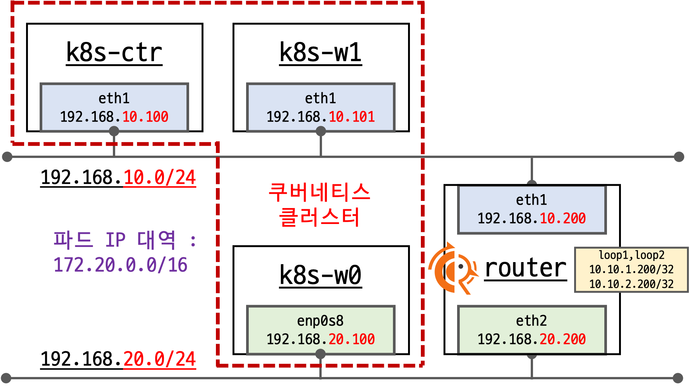
- 기본 배포 가상 머신 : k8s-ctr, k8s-w1, k8s-w0, router (frr 라우팅)
- router : 192.168.10.0/24 ↔ 192.168.20.0/24 대역 라우팅 역할, k8s 에 join 되지 않은 서버, BGP 동작을 위한 frr 툴 설치됨 - FRR
- k8s-w0 : k8s-ctr/w1 노드와 다른 네트워크 대역에 배치
- 실습 동작에 필요한 static routing 설정 됨 with vagrant script file
실습 환경 배포 파일 작성
Vagrantfile : 가상머신 정의, 부팅 시 초기 프로비저닝 설정
# Variables K8SV = '1.33.2-1.1' # Kubernetes Version : apt list -a kubelet , ex) 1.32.5-1.1 CONTAINERDV = '1.7.27-1' # Containerd Version : apt list -a containerd.io , ex) 1.6.33-1 CILIUMV = '1.18.0' # Cilium CNI Version : https://github.com/cilium/cilium/tags N = 1 # max number of worker nodes # Base Image https://portal.cloud.hashicorp.com/vagrant/discover/bento/ubuntu-24.04 BOX_IMAGE = "bento/ubuntu-24.04" BOX_VERSION = "202502.21.0" Vagrant.configure("2") do |config| #-ControlPlane Node config.vm.define "k8s-ctr" do |subconfig| subconfig.vm.box = BOX_IMAGE subconfig.vm.box_version = BOX_VERSION subconfig.vm.provider "virtualbox" do |vb| vb.customize ["modifyvm", :id, "--groups", "/Cilium-Lab"] vb.customize ["modifyvm", :id, "--nicpromisc2", "allow-all"] vb.name = "k8s-ctr" vb.cpus = 2 vb.memory = 2560 vb.linked_clone = true end subconfig.vm.host_name = "k8s-ctr" subconfig.vm.network "private_network", ip: "192.168.10.100" subconfig.vm.network "forwarded_port", guest: 22, host: 60000, auto_correct: true, id: "ssh" subconfig.vm.synced_folder "./", "/vagrant", disabled: true subconfig.vm.provision "shell", path: "https://raw.githubusercontent.com/gasida/vagrant-lab/refs/heads/main/cilium-study/4w/init_cfg.sh", args: [ K8SV, CONTAINERDV ] subconfig.vm.provision "shell", path: "https://raw.githubusercontent.com/gasida/vagrant-lab/refs/heads/main/cilium-study/4w/k8s-ctr.sh", args: [ N, CILIUMV, K8SV ] subconfig.vm.provision "shell", path: "https://raw.githubusercontent.com/gasida/vagrant-lab/refs/heads/main/cilium-study/4w/route-add1.sh" end #-Worker Nodes Subnet1 (1..N).each do |i| config.vm.define "k8s-w#{i}" do |subconfig| subconfig.vm.box = BOX_IMAGE subconfig.vm.box_version = BOX_VERSION subconfig.vm.provider "virtualbox" do |vb| vb.customize ["modifyvm", :id, "--groups", "/Cilium-Lab"] vb.customize ["modifyvm", :id, "--nicpromisc2", "allow-all"] vb.name = "k8s-w#{i}" vb.cpus = 2 vb.memory = 1536 vb.linked_clone = true end subconfig.vm.host_name = "k8s-w#{i}" subconfig.vm.network "private_network", ip: "192.168.10.10#{i}" subconfig.vm.network "forwarded_port", guest: 22, host: "6000#{i}", auto_correct: true, id: "ssh" subconfig.vm.synced_folder "./", "/vagrant", disabled: true subconfig.vm.provision "shell", path: "https://raw.githubusercontent.com/gasida/vagrant-lab/refs/heads/main/cilium-study/4w/init_cfg.sh", args: [ K8SV, CONTAINERDV] subconfig.vm.provision "shell", path: "https://raw.githubusercontent.com/gasida/vagrant-lab/refs/heads/main/cilium-study/4w/k8s-w.sh" subconfig.vm.provision "shell", path: "https://raw.githubusercontent.com/gasida/vagrant-lab/refs/heads/main/cilium-study/4w/route-add1.sh" end end #-Router Node config.vm.define "router" do |subconfig| subconfig.vm.box = BOX_IMAGE subconfig.vm.box_version = BOX_VERSION subconfig.vm.provider "virtualbox" do |vb| vb.customize ["modifyvm", :id, "--groups", "/Cilium-Lab"] vb.name = "router" vb.cpus = 1 vb.memory = 768 vb.linked_clone = true end subconfig.vm.host_name = "router" subconfig.vm.network "private_network", ip: "192.168.10.200" subconfig.vm.network "forwarded_port", guest: 22, host: 60009, auto_correct: true, id: "ssh" subconfig.vm.network "private_network", ip: "192.168.20.200", auto_config: false subconfig.vm.synced_folder "./", "/vagrant", disabled: true subconfig.vm.provision "shell", path: "https://raw.githubusercontent.com/gasida/vagrant-lab/refs/heads/main/cilium-study/4w/router.sh" end #-Worker Nodes Subnet2 config.vm.define "k8s-w0" do |subconfig| subconfig.vm.box = BOX_IMAGE subconfig.vm.box_version = BOX_VERSION subconfig.vm.provider "virtualbox" do |vb| vb.customize ["modifyvm", :id, "--groups", "/Cilium-Lab"] vb.customize ["modifyvm", :id, "--nicpromisc2", "allow-all"] vb.name = "k8s-w0" vb.cpus = 2 vb.memory = 1536 vb.linked_clone = true end subconfig.vm.host_name = "k8s-w0" subconfig.vm.network "private_network", ip: "192.168.20.100" subconfig.vm.network "forwarded_port", guest: 22, host: 60010, auto_correct: true, id: "ssh" subconfig.vm.synced_folder "./", "/vagrant", disabled: true subconfig.vm.provision "shell", path: "https://raw.githubusercontent.com/gasida/vagrant-lab/refs/heads/main/cilium-study/4w/init_cfg.sh", args: [ K8SV, CONTAINERDV] subconfig.vm.provision "shell", path: "https://raw.githubusercontent.com/gasida/vagrant-lab/refs/heads/main/cilium-study/4w/k8s-w.sh" subconfig.vm.provision "shell", path: "https://raw.githubusercontent.com/gasida/vagrant-lab/refs/heads/main/cilium-study/4w/route-add2.sh" end end
init_cfg.sh : args 참고하여 설치
#!/usr/bin/env bash echo ">>>> Initial Config Start <<<<" echo "[TASK 1] Setting Profile & Bashrc" echo 'alias vi=vim' >> /etc/profile echo "sudo su -" >> /home/vagrant/.bashrc ln -sf /usr/share/zoneinfo/Asia/Seoul /etc/localtime # Change Timezone echo "[TASK 2] Disable AppArmor" systemctl stop ufw && systemctl disable ufw >/dev/null 2>&1 systemctl stop apparmor && systemctl disable apparmor >/dev/null 2>&1 echo "[TASK 3] Disable and turn off SWAP" swapoff -a && sed -i '/swap/s/^/#/' /etc/fstab echo "[TASK 4] Install Packages" apt update -qq >/dev/null 2>&1 apt-get install apt-transport-https ca-certificates curl gpg -y -qq >/dev/null 2>&1 # Download the public signing key for the Kubernetes package repositories. mkdir -p -m 755 /etc/apt/keyrings K8SMMV=$(echo $1 | sed -En 's/^([0-9]+\.[0-9]+)\..*/\1/p') curl -fsSL https://pkgs.k8s.io/core:/stable:/v$K8SMMV/deb/Release.key | sudo gpg --dearmor -o /etc/apt/keyrings/kubernetes-apt-keyring.gpg echo "deb [signed-by=/etc/apt/keyrings/kubernetes-apt-keyring.gpg] https://pkgs.k8s.io/core:/stable:/v$K8SMMV/deb/ /" >> /etc/apt/sources.list.d/kubernetes.list curl -fsSL https://download.docker.com/linux/ubuntu/gpg -o /etc/apt/keyrings/docker.asc echo "deb [arch=$(dpkg --print-architecture) signed-by=/etc/apt/keyrings/docker.asc] https://download.docker.com/linux/ubuntu $(. /etc/os-release && echo "$VERSION_CODENAME") stable" | tee /etc/apt/sources.list.d/docker.list > /dev/null # packets traversing the bridge are processed by iptables for filtering echo 1 > /proc/sys/net/ipv4/ip_forward echo "net.ipv4.ip_forward = 1" >> /etc/sysctl.d/k8s.conf # enable br_netfilter for iptables modprobe br_netfilter modprobe overlay echo "br_netfilter" >> /etc/modules-load.d/k8s.conf echo "overlay" >> /etc/modules-load.d/k8s.conf echo "[TASK 5] Install Kubernetes components (kubeadm, kubelet and kubectl)" # Update the apt package index, install kubelet, kubeadm and kubectl, and pin their version apt update >/dev/null 2>&1 # apt list -a kubelet ; apt list -a containerd.io apt-get install -y kubelet=$1 kubectl=$1 kubeadm=$1 containerd.io=$2 >/dev/null 2>&1 apt-mark hold kubelet kubeadm kubectl >/dev/null 2>&1 # containerd configure to default and cgroup managed by systemd containerd config default > /etc/containerd/config.toml sed -i 's/SystemdCgroup = false/SystemdCgroup = true/g' /etc/containerd/config.toml # avoid WARN&ERRO(default endpoints) when crictl run cat <<EOF > /etc/crictl.yaml runtime-endpoint: unix:///run/containerd/containerd.sock image-endpoint: unix:///run/containerd/containerd.sock EOF # ready to install for k8s systemctl restart containerd && systemctl enable containerd systemctl enable --now kubelet echo "[TASK 6] Install Packages & Helm" export DEBIAN_FRONTEND=noninteractive apt-get install -y bridge-utils sshpass net-tools conntrack ngrep tcpdump ipset arping wireguard jq yq tree bash-completion unzip kubecolor termshark >/dev/null 2>&1 curl -s https://raw.githubusercontent.com/helm/helm/master/scripts/get-helm-3 | bash >/dev/null 2>&1 echo ">>>> Initial Config End <<<<"
k8s-ctr.sh : kubeadm init, Cilium CNI 설치, 편리성 설정(k, kc), k9s, local-path-sc, metrics-server
kubeadm-init-ctr-config.yaml
apiVersion: kubeadm.k8s.io/v1beta4 kind: InitConfiguration bootstrapTokens: - token: "123456.1234567890123456" ttl: "0s" usages: - signing - authentication localAPIEndpoint: advertiseAddress: "192.168.10.100" nodeRegistration: kubeletExtraArgs: - name: node-ip value: "192.168.10.100" criSocket: "unix:///run/containerd/containerd.sock" --- apiVersion: kubeadm.k8s.io/v1beta4 kind: ClusterConfiguration kubernetesVersion: "K8S_VERSION_PLACEHOLDER" networking: podSubnet: "10.244.0.0/16" serviceSubnet: "10.96.0.0/16"
#!/usr/bin/env bash echo ">>>> K8S Controlplane config Start <<<<" echo "[TASK 1] Initial Kubernetes" curl --silent -o /root/kubeadm-init-ctr-config.yaml https://raw.githubusercontent.com/gasida/vagrant-lab/refs/heads/main/cilium-study/kubeadm-init-ctr-config.yaml K8SMMV=$(echo $3 | sed -En 's/^([0-9]+\.[0-9]+\.[0-9]+).*/\1/p') sed -i "s/K8S_VERSION_PLACEHOLDER/v${K8SMMV}/g" /root/kubeadm-init-ctr-config.yaml kubeadm init --config="/root/kubeadm-init-ctr-config.yaml" >/dev/null 2>&1 echo "[TASK 2] Setting kube config file" mkdir -p /root/.kube cp -i /etc/kubernetes/admin.conf /root/.kube/config chown $(id -u):$(id -g) /root/.kube/config echo "[TASK 3] Source the completion" echo 'source <(kubectl completion bash)' >> /etc/profile echo 'source <(kubeadm completion bash)' >> /etc/profile echo "[TASK 4] Alias kubectl to k" echo 'alias k=kubectl' >> /etc/profile echo 'alias kc=kubecolor' >> /etc/profile echo 'complete -F __start_kubectl k' >> /etc/profile echo "[TASK 5] Install Kubectx & Kubens" git clone https://github.com/ahmetb/kubectx /opt/kubectx >/dev/null 2>&1 ln -s /opt/kubectx/kubens /usr/local/bin/kubens ln -s /opt/kubectx/kubectx /usr/local/bin/kubectx echo "[TASK 6] Install Kubeps & Setting PS1" git clone https://github.com/jonmosco/kube-ps1.git /root/kube-ps1 >/dev/null 2>&1 cat <<"EOT" >> /root/.bash_profile source /root/kube-ps1/kube-ps1.sh KUBE_PS1_SYMBOL_ENABLE=true function get_cluster_short() { echo "$1" | cut -d . -f1 } KUBE_PS1_CLUSTER_FUNCTION=get_cluster_short KUBE_PS1_SUFFIX=') ' PS1='$(kube_ps1)'$PS1 EOT kubectl config rename-context "kubernetes-admin@kubernetes" "HomeLab" >/dev/null 2>&1 echo "[TASK 7] Install Cilium CNI" NODEIP=$(ip -4 addr show eth1 | grep -oP '(?<=inet\s)\d+(\.\d+){3}') helm repo add cilium https://helm.cilium.io/ >/dev/null 2>&1 helm repo update >/dev/null 2>&1 helm install cilium cilium/cilium --version $2 --namespace kube-system \ --set k8sServiceHost=192.168.10.100 --set k8sServicePort=6443 \ --set ipam.mode="cluster-pool" --set ipam.operator.clusterPoolIPv4PodCIDRList={"172.20.0.0/16"} --set ipv4NativeRoutingCIDR=172.20.0.0/16 \ --set routingMode=native --set autoDirectNodeRoutes=false --set bgpControlPlane.enabled=true \ --set kubeProxyReplacement=true --set bpf.masquerade=true --set installNoConntrackIptablesRules=true \ --set endpointHealthChecking.enabled=false --set healthChecking=false \ --set hubble.enabled=true --set hubble.relay.enabled=true --set hubble.ui.enabled=true \ --set hubble.ui.service.type=NodePort --set hubble.ui.service.nodePort=30003 \ --set prometheus.enabled=true --set operator.prometheus.enabled=true --set hubble.metrics.enableOpenMetrics=true \ --set hubble.metrics.enabled="{dns,drop,tcp,flow,port-distribution,icmp,httpV2:exemplars=true;labelsContext=source_ip\,source_namespace\,source_workload\,destination_ip\,destination_namespace\,destination_workload\,traffic_direction}" \ --set operator.replicas=1 --set debug.enabled=true >/dev/null 2>&1 echo "[TASK 8] Install Cilium / Hubble CLI" CILIUM_CLI_VERSION=$(curl -s https://raw.githubusercontent.com/cilium/cilium-cli/main/stable.txt) CLI_ARCH=amd64 if [ "$(uname -m)" = "aarch64" ]; then CLI_ARCH=arm64; fi curl -L --fail --remote-name-all https://github.com/cilium/cilium-cli/releases/download/${CILIUM_CLI_VERSION}/cilium-linux-${CLI_ARCH}.tar.gz >/dev/null 2>&1 tar xzvfC cilium-linux-${CLI_ARCH}.tar.gz /usr/local/bin rm cilium-linux-${CLI_ARCH}.tar.gz HUBBLE_VERSION=$(curl -s https://raw.githubusercontent.com/cilium/hubble/master/stable.txt) HUBBLE_ARCH=amd64 if [ "$(uname -m)" = "aarch64" ]; then HUBBLE_ARCH=arm64; fi curl -L --fail --remote-name-all https://github.com/cilium/hubble/releases/download/$HUBBLE_VERSION/hubble-linux-${HUBBLE_ARCH}.tar.gz >/dev/null 2>&1 tar xzvfC hubble-linux-${HUBBLE_ARCH}.tar.gz /usr/local/bin rm hubble-linux-${HUBBLE_ARCH}.tar.gz echo "[TASK 9] Remove node taint" kubectl taint nodes k8s-ctr node-role.kubernetes.io/control-plane- echo "[TASK 10] local DNS with hosts file" echo "192.168.10.100 k8s-ctr" >> /etc/hosts echo "192.168.10.200 router" >> /etc/hosts echo "192.168.20.100 k8s-w0" >> /etc/hosts for (( i=1; i<=$1; i++ )); do echo "192.168.10.10$i k8s-w$i" >> /etc/hosts; done echo "[TASK 11] Dynamically provisioning persistent local storage with Kubernetes" kubectl apply -f https://raw.githubusercontent.com/rancher/local-path-provisioner/v0.0.31/deploy/local-path-storage.yaml >/dev/null 2>&1 kubectl patch storageclass local-path -p '{"metadata": {"annotations":{"storageclass.kubernetes.io/is-default-class":"true"}}}' >/dev/null 2>&1 # echo "[TASK 12] Install Prometheus & Grafana" # kubectl apply -f https://raw.githubusercontent.com/cilium/cilium/1.18.0/examples/kubernetes/addons/prometheus/monitoring-example.yaml >/dev/null 2>&1 # kubectl patch svc -n cilium-monitoring prometheus -p '{"spec": {"type": "NodePort", "ports": [{"port": 9090, "targetPort": 9090, "nodePort": 30001}]}}' >/dev/null 2>&1 # kubectl patch svc -n cilium-monitoring grafana -p '{"spec": {"type": "NodePort", "ports": [{"port": 3000, "targetPort": 3000, "nodePort": 30002}]}}' >/dev/null 2>&1 # echo "[TASK 12] Install Prometheus Stack" # helm repo add prometheus-community https://prometheus-community.github.io/helm-charts >/dev/null 2>&1 # cat <<EOT > monitor-values.yaml # prometheus: # prometheusSpec: # scrapeInterval: "15s" # evaluationInterval: "15s" # service: # type: NodePort # nodePort: 30001 # grafana: # defaultDashboardsTimezone: Asia/Seoul # adminPassword: prom-operator # service: # type: NodePort # nodePort: 30002 # alertmanager: # enabled: false # defaultRules: # create: false # prometheus-windows-exporter: # prometheus: # monitor: # enabled: false # EOT # helm install kube-prometheus-stack prometheus-community/kube-prometheus-stack --version 75.15.1 \ # -f monitor-values.yaml --create-namespace --namespace monitoring >/dev/null 2>&1 echo "[TASK 13] Install Metrics-server" helm repo add metrics-server https://kubernetes-sigs.github.io/metrics-server/ >/dev/null 2>&1 helm upgrade --install metrics-server metrics-server/metrics-server --set 'args[0]=--kubelet-insecure-tls' -n kube-system >/dev/null 2>&1 echo "[TASK 14] Install k9s" CLI_ARCH=amd64 if [ "$(uname -m)" = "aarch64" ]; then CLI_ARCH=arm64; fi wget https://github.com/derailed/k9s/releases/latest/download/k9s_linux_${CLI_ARCH}.deb -O /tmp/k9s_linux_${CLI_ARCH}.deb >/dev/null 2>&1 apt install /tmp/k9s_linux_${CLI_ARCH}.deb >/dev/null 2>&1 echo ">>>> K8S Controlplane Config End <<<<"
k8s-w.sh : kubeadm join
kubeadm-join-worker-config.yaml
apiVersion: kubeadm.k8s.io/v1beta4 kind: JoinConfiguration discovery: bootstrapToken: token: "123456.1234567890123456" apiServerEndpoint: "192.168.10.100:6443" unsafeSkipCAVerification: true nodeRegistration: criSocket: "unix:///run/containerd/containerd.sock" kubeletExtraArgs: - name: node-ip value: "NODE_IP_PLACEHOLDER"
#!/usr/bin/env bash echo ">>>> K8S Node config Start <<<<" echo "[TASK 1] K8S Controlplane Join" curl --silent -o /root/kubeadm-join-worker-config.yaml https://raw.githubusercontent.com/gasida/vagrant-lab/refs/heads/main/cilium-study/2w/kubeadm-join-worker-config.yaml NODEIP=$(ip -4 addr show eth1 | grep -oP '(?<=inet\s)\d+(\.\d+){3}') sed -i "s/NODE_IP_PLACEHOLDER/${NODEIP}/g" /root/kubeadm-join-worker-config.yaml kubeadm join --config="/root/kubeadm-join-worker-config.yaml" > /dev/null 2>&1 echo ">>>> K8S Node config End <<<<"
route-add1.sh : k8s node 들이 내부망과 통신을 위한 route 설정
#!/usr/bin/env bash echo ">>>> Route Add Config Start <<<<" chmod 600 /etc/netplan/01-netcfg.yaml chmod 600 /etc/netplan/50-vagrant.yaml cat <<EOT>> /etc/netplan/50-vagrant.yaml routes: - to: 192.168.20.0/24 via: 192.168.10.200 # - to: 172.20.0.0/16 # via: 192.168.10.200 EOT netplan apply echo ">>>> Route Add Config End <<<<"
route-add2.sh : k8s node 들이 내부망과 통신을 위한 route 설정
#!/usr/bin/env bash echo ">>>> Route Add Config Start <<<<" chmod 600 /etc/netplan/01-netcfg.yaml chmod 600 /etc/netplan/50-vagrant.yaml cat <<EOT>> /etc/netplan/50-vagrant.yaml routes: - to: 192.168.10.0/24 via: 192.168.20.200 # - to: 172.20.0.0/16 # via: 192.168.20.200 EOT netplan apply echo ">>>> Route Add Config End <<<<"
router.sh : router(frr - BGP) 역할, 간단 웹 서버 역할
#!/usr/bin/env bash echo ">>>> Initial Config Start <<<<" echo "[TASK 0] Setting eth2" chmod 600 /etc/netplan/01-netcfg.yaml chmod 600 /etc/netplan/50-vagrant.yaml cat << EOT >> /etc/netplan/50-vagrant.yaml eth2: addresses: - 192.168.20.200/24 EOT netplan apply echo "[TASK 1] Setting Profile & Bashrc" echo 'alias vi=vim' >> /etc/profile echo "sudo su -" >> /home/vagrant/.bashrc ln -sf /usr/share/zoneinfo/Asia/Seoul /etc/localtime echo "[TASK 2] Disable AppArmor" systemctl stop ufw && systemctl disable ufw >/dev/null 2>&1 systemctl stop apparmor && systemctl disable apparmor >/dev/null 2>&1 echo "[TASK 3] Add Kernel setting - IP Forwarding" sed -i 's/#net.ipv4.ip_forward=1/net.ipv4.ip_forward=1/g' /etc/sysctl.conf sysctl -p >/dev/null 2>&1 echo "[TASK 4] Setting Dummy Interface" modprobe dummy ip link add loop1 type dummy ip link set loop1 up ip addr add 10.10.1.200/24 dev loop1 ip link add loop2 type dummy ip link set loop2 up ip addr add 10.10.2.200/24 dev loop2 echo "[TASK 5] Install Packages" export DEBIAN_FRONTEND=noninteractive apt update -qq >/dev/null 2>&1 apt-get install net-tools jq yq tree ngrep tcpdump arping termshark -y -qq >/dev/null 2>&1 echo "[TASK 6] Install Apache" apt install apache2 -y >/dev/null 2>&1 echo -e "<h1>Web Server : $(hostname)</h1>" > /var/www/html/index.html echo "[TASK 7] Configure FRR" apt install frr -y >/dev/null 2>&1 sed -i "s/^bgpd=no/bgpd=yes/g" /etc/frr/daemons NODEIP=$(ip -4 addr show eth1 | grep -oP '(?<=inet\s)\d+(\.\d+){3}') cat << EOF >> /etc/frr/frr.conf ! router bgp 65000 bgp router-id $NODEIP bgp graceful-restart no bgp ebgp-requires-policy bgp bestpath as-path multipath-relax maximum-paths 4 network 10.10.1.0/24 EOF systemctl daemon-reexec >/dev/null 2>&1 systemctl restart frr >/dev/null 2>&1 systemctl enable frr >/dev/null 2>&1 echo ">>>> Initial Config End <<<<"
mkdir cilium-lab && cd cilium-lab curl -O https://raw.githubusercontent.com/gasida/vagrant-lab/refs/heads/main/cilium-study/5w/Vagrantfile vagrant up
실습 환경 배포 :
vagrant up- [k8s-ctr] 접속 후 기본 정보 확인
# cat /etc/hosts for i in k8s-w0 k8s-w1 router ; do echo ">> node : $i <<"; sshpass -p 'vagrant' ssh -o StrictHostKeyChecking=no vagrant@$i hostname; echo; done # 클러스터 정보 확인 kubectl cluster-info kubectl cluster-info dump | grep -m 2 -E "cluster-cidr|service-cluster-ip-range" kubectl describe cm -n kube-system kubeadm-config kubectl describe cm -n kube-system kubelet-config # 노드 정보 : 상태, INTERNAL-IP 확인 ifconfig | grep -iEA1 'eth[0-9]:' kubectl get node -owide # 파드 정보 : 상태, 파드 IP 확인 kubectl get nodes -o jsonpath='{range .items[*]}{.metadata.name}{"\t"}{.spec.podCIDR}{"\n"}{end}' kubectl get ciliumnode -o json | grep podCIDRs -A2 kubectl get pod -A -owide kubectl get ciliumendpoints -A # ipam 모드 확인 cilium config view | grep ^ipam # iptables 확인 iptables-save iptables -t nat -S iptables -t filter -S iptables -t mangle -S iptables -t raw -S
- [k8s-ctr] cilium 설치 정보 확인
# cilium 상태 확인 : bgp-control-plane 미리 활성화. kubectl get cm -n kube-system cilium-config -o json | jq cilium status cilium config view | grep -i bgp bgp-router-id-allocation-ip-pool bgp-router-id-allocation-mode default bgp-secrets-namespace kube-system enable-bgp-control-plane true enable-bgp-control-plane-status-report true # kubectl exec -n kube-system -c cilium-agent -it ds/cilium -- cilium-dbg status --verbose kubectl exec -n kube-system -c cilium-agent -it ds/cilium -- cilium-dbg metrics list # monitor kubectl exec -n kube-system -c cilium-agent -it ds/cilium -- cilium-dbg monitor kubectl exec -n kube-system -c cilium-agent -it ds/cilium -- cilium-dbg monitor -v kubectl exec -n kube-system -c cilium-agent -it ds/cilium -- cilium-dbg monitor -v -v ...
- [k8s-ctr] 접속 후 기본 정보 확인
네트워크 정보 확인 :
autoDirectNodeRoutes=false# router 네트워크 인터페이스 정보 확인 sshpass -p 'vagrant' ssh vagrant@router ip -br -c -4 addr lo UNKNOWN 127.0.0.1/8 eth0 UP 10.0.2.15/24 metric 100 eth1 UP 192.168.10.200/24 eth2 UP 192.168.20.200/24 loop1 UNKNOWN 10.10.1.200/24 loop2 UNKNOWN 10.10.2.200/24 # k8s node 네트워크 인터페이스 정보 확인 ip -c -4 addr show dev eth1 3: eth1: <BROADCAST,MULTICAST,UP,LOWER_UP> mtu 1500 qdisc fq_codel state UP group default qlen 1000 altname enp0s9 inet 192.168.10.100/24 brd 192.168.10.255 scope global eth1 valid_lft forever preferred_lft forever for i in w1 w0 ; do echo ">> node : k8s-$i <<"; sshpass -p 'vagrant' ssh vagrant@k8s-$i ip -c -4 addr show dev eth1; echo; done >> node : k8s-w1 << 3: eth1: <BROADCAST,MULTICAST,UP,LOWER_UP> mtu 1500 qdisc fq_codel state UP group default qlen 1000 altname enp0s9 inet 192.168.10.101/24 brd 192.168.10.255 scope global eth1 valid_lft forever preferred_lft forever >> node : k8s-w0 << 3: eth1: <BROADCAST,MULTICAST,UP,LOWER_UP> mtu 1500 qdisc fq_codel state UP group default qlen 1000 altname enp0s9 inet 192.168.20.100/24 brd 192.168.20.255 scope global eth1 valid_lft forever preferred_lft forever # 라우팅 정보 확인 sshpass -p 'vagrant' ssh vagrant@router ip -c route ip -c route | grep static ## 노드별 PodCIDR 라우팅이 없다! ## 자기 자신의 PodCIDR 제외하고 다른 node의 PodCIDR이 없다 -> 현재 pod간 통신이 불가능한 상황!! ip -c route default via 10.0.2.2 dev eth0 proto dhcp src 10.0.2.15 metric 100 10.0.2.0/24 dev eth0 proto kernel scope link src 10.0.2.15 metric 100 10.0.2.2 dev eth0 proto dhcp scope link src 10.0.2.15 metric 100 10.0.2.3 dev eth0 proto dhcp scope link src 10.0.2.15 metric 100 172.20.0.0/24 via 172.20.0.139 dev cilium_host proto kernel src 172.20.0.139 172.20.0.139 dev cilium_host proto kernel scope link 192.168.10.0/24 dev eth1 proto kernel scope link src 192.168.10.100 192.168.20.0/24 via 192.168.10.200 dev eth1 proto static for i in w1 w0 ; do echo ">> node : k8s-$i <<"; sshpass -p 'vagrant' ssh vagrant@k8s-$i ip -c route; echo; done >> node : k8s-w1 << default via 10.0.2.2 dev eth0 proto dhcp src 10.0.2.15 metric 100 10.0.2.0/24 dev eth0 proto kernel scope link src 10.0.2.15 metric 100 10.0.2.2 dev eth0 proto dhcp scope link src 10.0.2.15 metric 100 10.0.2.3 dev eth0 proto dhcp scope link src 10.0.2.15 metric 100 172.20.1.0/24 via 172.20.1.254 dev cilium_host proto kernel src 172.20.1.254 172.20.1.254 dev cilium_host proto kernel scope link 192.168.10.0/24 dev eth1 proto kernel scope link src 192.168.10.101 192.168.20.0/24 via 192.168.10.200 dev eth1 proto static >> node : k8s-w0 << default via 10.0.2.2 dev eth0 proto dhcp src 10.0.2.15 metric 100 10.0.2.0/24 dev eth0 proto kernel scope link src 10.0.2.15 metric 100 10.0.2.2 dev eth0 proto dhcp scope link src 10.0.2.15 metric 100 10.0.2.3 dev eth0 proto dhcp scope link src 10.0.2.15 metric 100 172.20.2.0/24 via 172.20.2.87 dev cilium_host proto kernel src 172.20.2.87 172.20.2.87 dev cilium_host proto kernel scope link 192.168.10.0/24 via 192.168.20.200 dev eth1 proto static 192.168.20.0/24 dev eth1 proto kernel scope link src 192.168.20.100 # 통신 확인 ping -c 1 192.168.20.100 # k8s-w0 eth1
샘플 애플리케이션 배포 및 통신 문제 확인
- 샘플 애플리케이션 배포
# 샘플 애플리케이션 배포 cat << EOF | kubectl apply -f - apiVersion: apps/v1 kind: Deployment metadata: name: webpod spec: replicas: 3 selector: matchLabels: app: webpod template: metadata: labels: app: webpod spec: affinity: podAntiAffinity: requiredDuringSchedulingIgnoredDuringExecution: - labelSelector: matchExpressions: - key: app operator: In values: - sample-app topologyKey: "kubernetes.io/hostname" containers: - name: webpod image: traefik/whoami ports: - containerPort: 80 --- apiVersion: v1 kind: Service metadata: name: webpod labels: app: webpod spec: selector: app: webpod ports: - protocol: TCP port: 80 targetPort: 80 type: ClusterIP EOF # k8s-ctr 노드에 curl-pod 파드 배포 cat <<EOF | kubectl apply -f - apiVersion: v1 kind: Pod metadata: name: curl-pod labels: app: curl spec: nodeName: k8s-ctr containers: - name: curl image: nicolaka/netshoot command: ["tail"] args: ["-f", "/dev/null"] terminationGracePeriodSeconds: 0 EOF
- 통신 문제 확인 : 노드 내의 파드들 끼리만 통신되는 중!
# 배포 확인 kubectl get deploy,svc,ep webpod -owide kubectl get endpointslices -l app=webpod kubectl get ciliumendpoints # IP 확인 NAME SECURITY IDENTITY ENDPOINT STATE IPV4 IPV6 curl-pod 22858 ready 172.20.0.151 webpod-697b545f57-2xwss 18425 ready 172.20.2.162 webpod-697b545f57-458fh 18425 ready 172.20.1.136 webpod-697b545f57-lp4hk 18425 ready 172.20.0.221 # 통신 문제 확인 : 노드 내의 파드들 끼리만 통신되는 중! kubectl exec -it curl-pod -- curl -s --connect-timeout 1 webpod | grep Hostname command terminated with exit code 28 # curl-pod => webpod-697b545f57-lp4hk 로의 통신밖에 안된다. 즉, curl-pod가 위치한 node내에서 밖에 통신이 안된다. kubectl exec -it curl-pod -- sh -c 'while true; do curl -s --connect-timeout 1 webpod | grep Hostname; echo "---" ; sleep 1; done' --- --- Hostname: webpod-697b545f57-lp4hk --- Hostname: webpod-697b545f57-lp4hk --- --- # cilium-dbg, map kubectl exec -n kube-system ds/cilium -- cilium-dbg ip list kubectl exec -n kube-system ds/cilium -- cilium-dbg endpoint list kubectl exec -n kube-system ds/cilium -- cilium-dbg service list kubectl exec -n kube-system ds/cilium -- cilium-dbg bpf lb list kubectl exec -n kube-system ds/cilium -- cilium-dbg bpf nat list kubectl exec -n kube-system ds/cilium -- cilium-dbg map list | grep -v '0 0' kubectl exec -n kube-system ds/cilium -- cilium-dbg map get cilium_lb4_services_v2 kubectl exec -n kube-system ds/cilium -- cilium-dbg map get cilium_lb4_backends_v3 kubectl exec -n kube-system ds/cilium -- cilium-dbg map get cilium_lb4_reverse_nat kubectl exec -n kube-system ds/cilium -- cilium-dbg map get cilium_ipcache_v2
- 샘플 애플리케이션 배포
- Cilium BGP Control Plane
Cilium BGP Control Plane (BGPv2) : Cilium Custom Resources 를 통해 BGP 설정 관리 가능 - Docs
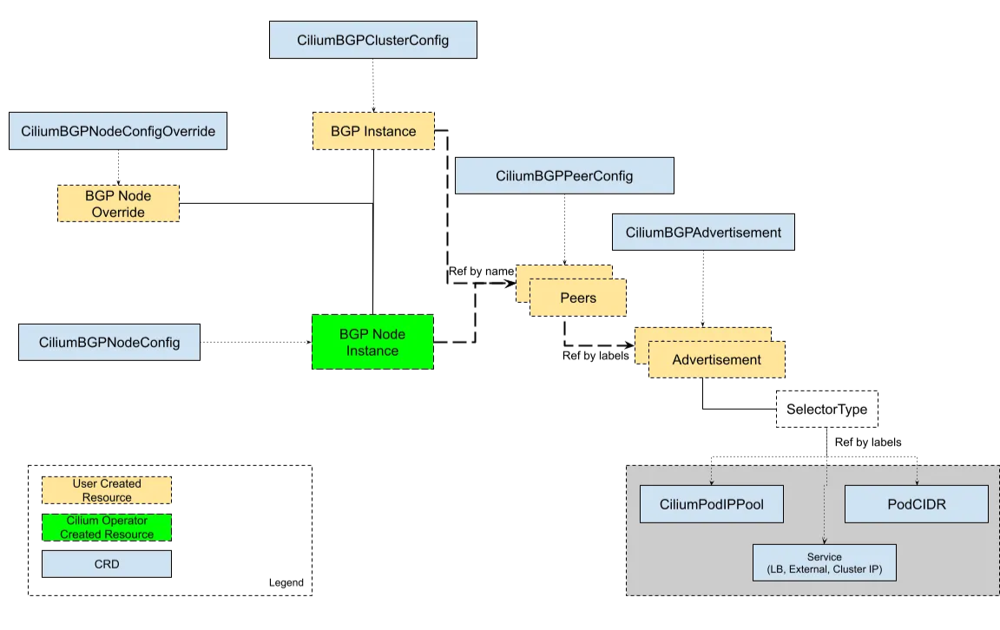
https://docs.cilium.io/en/stable/network/bgp-control-plane/bgp-control-plane-v2/ CiliumBGPClusterConfig: Defines BGP instances and peer configurations that are applied to multiple nodes.
CiliumBGPPeerConfig: A common set of BGP peering setting. It can be used across multiple peers.
CiliumBGPAdvertisement: Defines prefixes that are injected into the BGP routing table.
CiliumBGPNodeConfigOverride: Defines node-specific BGP configuration to provide a finer control.
1.1. BGP 설정 후 통신 확인 : Cilium의 BGP는 기본적으로 외부 경로를 커널 라우팅 테이블에 주입하지 않음.
- router 접속 후 설정 :
sshpass -p 'vagrant' ssh vagrant@router# k8s-ctr 에서 router 로 ssh 접속 sshpass -p 'vagrant' ssh vagrant@router # ss -tnlp | grep -iE 'zebra|bgpd' ps -ef |grep frr root 4185 1 0 Aug16 ? 00:00:00 /usr/lib/frr/watchfrr -d -F traditional zebra bgpd staticd frr 4198 1 0 Aug16 ? 00:00:00 /usr/lib/frr/zebra -d -F traditional -A 127.0.0.1 -s 90000000 frr 4203 1 0 Aug16 ? 00:00:00 /usr/lib/frr/bgpd -d -F traditional -A 127.0.0.1 frr 4210 1 0 Aug16 ? 00:00:00 /usr/lib/frr/staticd -d -F traditional -A 127.0.0.1 # vtysh -c 'show running' cat /etc/frr/frr.conf ... log syslog informational ! router bgp 65000 bgp router-id 192.168.10.200 bgp graceful-restart no bgp ebgp-requires-policy bgp bestpath as-path multipath-relax maximum-paths 4 # vtysh -c 'show running' vtysh -c 'show ip bgp summary' vtysh -c 'show ip bgp' BGP table version is 1, local router ID is 192.168.10.200, vrf id 0 Default local pref 100, local AS 65000 Status codes: s suppressed, d damped, h history, * valid, > best, = multipath, i internal, r RIB-failure, S Stale, R Removed Nexthop codes: @NNN nexthop's vrf id, < announce-nh-self Origin codes: i - IGP, e - EGP, ? - incomplete RPKI validation codes: V valid, I invalid, N Not found Network Next Hop Metric LocPrf Weight Path *> 10.10.1.0/24 0.0.0.0 0 32768 i ip -c route default via 10.0.2.2 dev eth0 proto dhcp src 10.0.2.15 metric 100 10.0.2.0/24 dev eth0 proto kernel scope link src 10.0.2.15 metric 100 10.0.2.2 dev eth0 proto dhcp scope link src 10.0.2.15 metric 100 10.0.2.3 dev eth0 proto dhcp scope link src 10.0.2.15 metric 100 10.10.1.0/24 dev loop1 proto kernel scope link src 10.10.1.200 10.10.2.0/24 dev loop2 proto kernel scope link src 10.10.2.200 192.168.10.0/24 dev eth1 proto kernel scope link src 192.168.10.200 192.168.20.0/24 dev eth2 proto kernel scope link src 192.168.20.200 vtysh -c 'show ip route' ... K>* 0.0.0.0/0 [0/100] via 10.0.2.2, eth0, src 10.0.2.15, 00:34:45 ... C>* 192.168.10.0/24 is directly connected, eth1, 00:34:45 C>* 192.168.20.0/24 is directly connected, eth2, 00:34:45 # Cilium node 연동 설정 방안 1 cat << EOF >> /etc/frr/frr.conf neighbor CILIUM peer-group neighbor CILIUM remote-as external neighbor 192.168.10.100 peer-group CILIUM neighbor 192.168.10.101 peer-group CILIUM neighbor 192.168.20.100 peer-group CILIUM EOF cat /etc/frr/frr.conf systemctl daemon-reexec && systemctl restart frr systemctl status frr --no-pager --full # 모니터링 걸어두기! journalctl -u frr -f # Cilium node 연동 설정 방안 2 vtysh --------------------------- ? show ? show running show ip route # config 모드 진입 conf ? ## bgp 65000 설정 진입 router bgp 65000 ? neighbor CILIUM peer-group neighbor CILIUM remote-as external neighbor 192.168.10.100 peer-group CILIUM neighbor 192.168.10.101 peer-group CILIUM neighbor 192.168.20.100 peer-group CILIUM end # Write configuration to the file (same as write file) write memory exit --------------------------- cat /etc/frr/frr.conf
- cilium 에 bgp 설정
# 신규 터미널 1 (router) : 모니터링 걸어두기! journalctl -u frr -f # 신규 터미널 2 (k8s-ctr) : 반복 호출 kubectl exec -it curl-pod -- sh -c 'while true; do curl -s --connect-timeout 1 webpod | grep Hostname; echo "---" ; sleep 1; done' # BGP 동작할 노드를 위한 label 설정 kubectl label nodes k8s-ctr k8s-w0 k8s-w1 enable-bgp=true kubectl get node -l enable-bgp=true NAME STATUS ROLES AGE VERSION k8s-ctr Ready control-plane 4d1h v1.33.2 k8s-w0 Ready <none> 4d1h v1.33.2 k8s-w1 Ready <none> 4d1h v1.33.2 # Config Cilium BGP cat << EOF | kubectl apply -f - apiVersion: cilium.io/v2 kind: CiliumBGPAdvertisement metadata: name: bgp-advertisements labels: advertise: bgp spec: advertisements: - advertisementType: "PodCIDR" --- apiVersion: cilium.io/v2 kind: CiliumBGPPeerConfig metadata: name: cilium-peer spec: timers: holdTimeSeconds: 9 keepAliveTimeSeconds: 3 ebgpMultihop: 2 gracefulRestart: enabled: true restartTimeSeconds: 15 families: - afi: ipv4 safi: unicast advertisements: matchLabels: advertise: "bgp" --- apiVersion: cilium.io/v2 kind: CiliumBGPClusterConfig metadata: name: cilium-bgp spec: nodeSelector: matchLabels: "enable-bgp": "true" bgpInstances: - name: "instance-65001" localASN: 65001 peers: - name: "tor-switch" peerASN: 65000 peerAddress: 192.168.10.200 # router ip address peerConfigRef: name: "cilium-peer" EOF
- 통신 확인
# 179를 k8s-ctr에서 listening하고 있지는 않다. ss -tnlp | grep 179 # BGP 연결 확인, k8s-ctr node가 remote router node의 179와 연결되있다. ss -tnp | grep 179 ESTAB 0 0 192.168.10.100:54315 192.168.10.200:179 users:(("cilium-agent",pid=5565,fd=50)) # cilium bgp 정보 확인 # k8s cluter의 AS는 65001이고 router node의 AS는 65000이며, 서로 BGP로 연결되어있다 cilium bgp peers Node Local AS Peer AS Peer Address Session State Uptime Family Received Advertised k8s-ctr 65001 65000 192.168.10.200 established 3m33s ipv4/unicast 4 2 k8s-w0 65001 65000 192.168.10.200 established 3m33s ipv4/unicast 4 2 k8s-w1 65001 65000 192.168.10.200 established 3m34s ipv4/unicast 4 2 cilium bgp routes available ipv4 unicast Node VRouter Prefix NextHop Age Attrs k8s-ctr 65001 172.20.0.0/24 0.0.0.0 3m47s [{Origin: i} {Nexthop: 0.0.0.0}] k8s-w0 65001 172.20.2.0/24 0.0.0.0 3m47s [{Origin: i} {Nexthop: 0.0.0.0}] k8s-w1 65001 172.20.1.0/24 0.0.0.0 3m47s [{Origin: i} {Nexthop: 0.0.0.0}] kubectl get ciliumbgpadvertisements,ciliumbgppeerconfigs,ciliumbgpclusterconfigs kubectl get ciliumbgpnodeconfigs -o yaml | yq ... "peeringState": "established", "routeCount": [ { "advertised": 2, "afi": "ipv4", "received": 1, "safi": "unicast" } ... # 신규 터미널 1 (router) : 모니터링 걸어두기! journalctl -u frr -f Aug 17 01:14:14 router bgpd[5309]: [M59KS-A3ZXZ] bgp_update_receive: rcvd End-of-RIB for IPv4 Unicast from 192.168.20.100 in vrf default Aug 17 01:14:14 router bgpd[5309]: [M59KS-A3ZXZ] bgp_update_receive: rcvd End-of-RIB for IPv4 Unicast from 192.168.10.101 in vrf default Aug 17 01:14:14 router bgpd[5309]: [M59KS-A3ZXZ] bgp_update_receive: rcvd End-of-RIB for IPv4 Unicast from 192.168.10.100 in vrf default ip -c route | grep bgp 172.20.0.0/24 nhid 32 via 192.168.10.100 dev eth1 proto bgp metric 20 # k8s-ctr 172.20.1.0/24 nhid 30 via 192.168.10.101 dev eth1 proto bgp metric 20 # k8s-w1 172.20.2.0/24 nhid 31 via 192.168.20.100 dev eth2 proto bgp metric 20 # k8s-w0 # 이제 router node에서 bgp 맺어진 정보들이 출력된다. vtysh -c 'show ip bgp summary' Neighbor V AS MsgRcvd MsgSent TblVer InQ OutQ Up/Down State/PfxRcd PfxSnt Desc 192.168.10.100 4 65001 173 176 0 0 0 00:08:28 1 4 N/A 192.168.10.101 4 65001 173 176 0 0 0 00:08:29 1 4 N/A 192.168.20.100 4 65001 173 176 0 0 0 00:08:28 1 4 N/A # 각 k8s node의 pod ip대역과 next hop으로 해당 k8s node의 ip가 보인다. vtysh -c 'show ip bgp' Network Next Hop Metric LocPrf Weight Path *> 10.10.1.0/24 0.0.0.0 0 32768 i *> 172.20.0.0/24 192.168.10.100 0 65001 i *> 172.20.1.0/24 192.168.10.101 0 65001 i *> 172.20.2.0/24 192.168.20.100 0 65001 i # 신규 터미널 2 (k8s-ctr) : 반복 호출??? # router node에서 bgp정보가 보이지만 여전히 정상적으로 webpod호출이 안된다. kubectl exec -it curl-pod -- sh -c 'while true; do curl -s --connect-timeout 1 webpod | grep Hostname; echo "---" ; sleep 1; done'
- BGP 정보 전달 확인
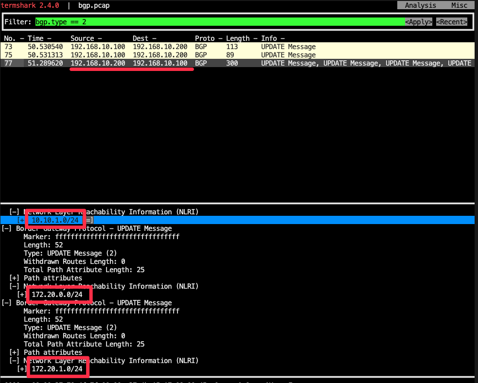
# k8s-ctr tcpdump 해두기 tcpdump -i eth1 tcp port 179 -w /tmp/bgp.pcap # router : frr 재시작 systemctl restart frr && journalctl -u frr -f # bgp.type == 2 termshark -r /tmp/bgp.pcap # 분명 Router 장비를 통해 BGP UPDATE로 받음을 확인. cilium bgp routes # 그러나 아래에서 볼 수 있듯이 route table에 아무런 정보가 업데이트 되지 않았다. # 위에서 webpod가 여전히 정상적으로 통신이 되지 않은 이유이다!! ip -c route default via 10.0.2.2 dev eth0 proto dhcp src 10.0.2.15 metric 100 10.0.2.0/24 dev eth0 proto kernel scope link src 10.0.2.15 metric 100 10.0.2.2 dev eth0 proto dhcp scope link src 10.0.2.15 metric 100 10.0.2.3 dev eth0 proto dhcp scope link src 10.0.2.15 metric 100 172.20.0.0/24 via 172.20.0.139 dev cilium_host proto kernel src 172.20.0.139 172.20.0.139 dev cilium_host proto kernel scope link 192.168.10.0/24 dev eth1 proto kernel scope link src 192.168.10.100 192.168.20.0/24 via 192.168.10.200 dev eth1 proto static
- ChatGPT 물어본 내용 : Cilium의 BGP는 기본적으로 외부 경로를 커널 라우팅 테이블에 주입하지 않음.
- 왜 Cilium이 받은 BGP 경로가 K8s 노드 OS 커널 라우팅 테이블에 안 들어오나?
- Cilium의 BGP는 "컨트롤 플레인"만 동작
- Cilium BGP Speaker(GoBGP 기반)는 BGP 세션을 맺고 prefix를 광고하거나 수신합니다.
- 하지만 수신한 경로를 Linux 커널(FIB) 에 바로 주입하지 않음.
- 대신 Cilium 내부에서 LoadBalancer 서비스 광고, PodCIDR 전파 같은 용도로만 사용.
- Pod/Service 네트워크 경로는 Cilium eBPF가 처리
- Cilium은 kube-proxy 대체 모드에서 eBPF datapath로 패킷을 라우팅합니다.
- 외부 경로 학습이 커널 라우팅 테이블에 없어도, eBPF map에 저장된 다음 홉 정보로 처리 가능.
- GoBGP 기본 설정도 FIB 설치 비활성화
- Cilium이 사용하는 GoBGP 라이브러리는
disable-telemetry,disable-fib상태로 빌드됨.
- 즉, 외부 라우터에서 들어온 BGP NLRI는 커널에 반영되지 않고, Cilium 내부 정책/광고 로직에서만 사용.
- Cilium이 사용하는 GoBGP 라이브러리는
- Cilium의 BGP는 "컨트롤 플레인"만 동작
- 서버는 네트워크 장비를 Default Gateway 로 두게 되어서, K8S Cilium Node가 굳이 BGP로 상세 라우팅 정보를 가질 필요가 없다!
- 즉, 많은 회사에서 온프레미스 서버가 존재하는 network는 toR switch와 연결되어있고 해당 toR switch가 default gateway가 되고 결국 해당 switch가 다른 서버들과 BGP로 연결되어 routing을 잡아주기 때문에 굳이 cilium node가 linux routing table에 bgp에 대한 routing 정보를 갖고있을 필요없이 default gateway로 보내면 된다.
- 왜 Cilium이 받은 BGP 경로가 K8s 노드 OS 커널 라우팅 테이블에 안 들어오나?
- router 접속 후 설정 :
1.2. 문제 해결 후 통신 확인 : 결론은 Cilium 으로 BGP 사용 시, 2개 이상의 NIC 사용할 경우에는 Node에 직접 라우팅 설정 및 관리가 필요함.
- 현재 실습 환경은 2개의 NIC(eth0, eth1)을 사용하고 있는 상황으로, default GW가 eth0 경로로 설정 되어 있음.
- eth1은 k8s 통신 용도로 사용 중. 즉, 현재 k8s 파드 사용 대역 통신 전체는 eth1을 통해서 라우팅 설정하면됨.
- 해당 라우팅을 상단에 네트워크 장비가 받게 되고, 해당 장비는 Cilium Node를 통해 모든 PodCIDR 정보를 알고 있기에, 목적지로 전달 가능함.
- 결론은 Cilium 으로 BGP 사용 시, 2개 이상의 NIC 사용할 경우에는 Node에 직접 라우팅 설정 및 관리가 필요함.
# k8s 파드 사용 대역 통신 전체는 eth1을 통해서 라우팅 설정 # k8s-ctr, k8s-w1은 eth1을 통해서 router의 eth1인 192.168.10.200로 ip route add 172.20.0.0/16 via 192.168.10.200 sshpass -p 'vagrant' ssh vagrant@k8s-w1 sudo ip route add 172.20.0.0/16 via 192.168.10.200 # k8s-w0은 eth1을 통해서 router의 eth2인 192.168.20.200로 sshpass -p 'vagrant' ssh vagrant@k8s-w0 sudo ip route add 172.20.0.0/16 via 192.168.20.200 # 이제 각 node에서 bgp에 대한 routing table 정보가 추가됨 # router 가 bgp로 학습한 라우팅 정보 한번 더 확인 : sshpass -p 'vagrant' ssh vagrant@router ip -c route | grep bgp 172.20.0.0/24 nhid 64 via 192.168.10.100 dev eth1 proto bgp metric 20 172.20.1.0/24 nhid 60 via 192.168.10.101 dev eth1 proto bgp metric 20 172.20.2.0/24 nhid 62 via 192.168.20.100 dev eth2 proto bgp metric 20 # 정상 통신 확인! # curl-pod에서 모든 webpod로 통신이 된다!! kubectl exec -it curl-pod -- sh -c 'while true; do curl -s --connect-timeout 1 webpod | grep Hostname; echo "---" ; sleep 1; done' --- Hostname: webpod-697b545f57-2xwss --- Hostname: webpod-697b545f57-lp4hk --- Hostn # hubble relay 포트 포워딩 실행 cilium hubble port-forward& hubble status # flow log 모니터링 hubble observe -f --protocol tcp --pod curl-pod Aug 16 16:47:10.945: default/curl-pod:45602 (ID:22858) <> default/webpod-697b545f57-458fh (ID:18425) pre-xlate-rev TRACED (TCP) Aug 16 16:47:10.945: default/curl-pod:45602 (ID:22858) <- default/webpod-697b545f57-458fh:80 (ID:18425) to-network FORWARDED (TCP Flags: ACK, PSH) Aug 16 16:47:10.946: default/curl-pod:45602 (ID:22858) -> default/webpod-697b545f57-458fh:80 (ID:18425) to-endpoint FORWARDED (TCP Flags: ACK, FIN) Aug 16 16:47:10.946: default/curl-pod:45602 (ID:22858) <- default/webpod-697b545f57-458fh:80 (ID:18425) to-network FORWARDED (TCP Flags: ACK, FIN) Aug 16 16:47:10.946: default/curl-pod:45602 (ID:22858) -> default/webpod-697b545f57-458fh:80 (ID:18425) to-endpoint FORWARDED (TCP Flags: ACK)
1.3. 노드 유지보수 (k8s-w0) 시 - Docs
- 노드 유지보수를 위한 설정
# 모니터링 : 반복 호출 kubectl exec -it curl-pod -- sh -c 'while true; do curl -s --connect-timeout 1 webpod | grep Hostname; echo "---" ; sleep 1; done' # (참고) BGP Control Plane logs kubectl logs -n kube-system -l name=cilium-operator -f | grep "subsys=bgp-cp-operator" kubectl logs -n kube-system -l k8s-app=cilium -f | grep "subsys=bgp-control-plane" # 유지보수를 위한 설정 kubectl drain k8s-w0 --ignore-daemonsets kubectl label nodes k8s-w0 enable-bgp=false --overwrite # 확인 # bgp node정보에 k8s-w0에 대한 정보가 자동으로 사라졌다. -> 유지보수 되는 노드는 cilium operator에 의해서 bgp peer에서 자동으로 퇴출된다. kubectl get node NAME STATUS ROLES AGE VERSION k8s-ctr Ready control-plane 4d2h v1.33.2 k8s-w0 Ready,SchedulingDisabled <none> 4d2h v1.33.2 k8s-w1 Ready <none> 4d2h v1.33.2 kubectl get ciliumbgpnodeconfigs NAME AGE k8s-ctr 35m k8s-w1 35m cilium bgp routes Node VRouter Prefix NextHop Age Attrs k8s-ctr 65001 172.20.0.0/24 0.0.0.0 35m52s [{Origin: i} {Nexthop: 0.0.0.0}] k8s-w1 65001 172.20.1.0/24 0.0.0.0 35m52s [{Origin: i} {Nexthop: 0.0.0.0}] cilium bgp peers Node Local AS Peer AS Peer Address Session State Uptime Family Received Advertised k8s-ctr 65001 65000 192.168.10.200 established 22m54s ipv4/unicast 3 2 k8s-w1 65001 65000 192.168.10.200 established 22m55s ipv4/unicast 3 2 sshpass -p 'vagrant' ssh vagrant@router "sudo vtysh -c 'show ip bgp summary'" sshpass -p 'vagrant' ssh vagrant@router "sudo vtysh -c 'show ip bgp'" Network Next Hop Metric LocPrf Weight Path *> 10.10.1.0/24 0.0.0.0 0 32768 i *> 172.20.0.0/24 192.168.10.100 0 65001 i *> 172.20.1.0/24 192.168.10.101 0 65001 i sshpass -p 'vagrant' ssh vagrant@router "sudo vtysh -c 'show ip route bgp'" B>* 172.20.0.0/24 [20/0] via 192.168.10.100, eth1, weight 1, 00:25:14 B>* 172.20.1.0/24 [20/0] via 192.168.10.101, eth1, weight 1, 00:25:15 sshpass -p 'vagrant' ssh vagrant@router ip -c route | grep bgp 172.20.0.0/24 nhid 64 via 192.168.10.100 dev eth1 proto bgp metric 20 172.20.1.0/24 nhid 60 via 192.168.10.101 dev eth1 proto bgp metric 20
- 원복 설정
# 원복 설정 kubectl label nodes k8s-w0 enable-bgp=true --overwrite kubectl uncordon k8s-w0 # 확인 # bgp peer정보가 다시 자동으로 추가되었다. kubectl get node k8s-ctr Ready control-plane 4d2h v1.33.2 k8s-w0 Ready <none> 4d2h v1.33.2 k8s-w1 Ready <none> 4d2h v1.33.2 kubectl get ciliumbgpnodeconfigs NAME AGE k8s-ctr 40m k8s-w0 57s k8s-w1 40m cilium bgp routes Node VRouter Prefix NextHop Age Attrs k8s-ctr 65001 172.20.0.0/24 0.0.0.0 40m46s [{Origin: i} {Nexthop: 0.0.0.0}] k8s-w0 65001 172.20.2.0/24 0.0.0.0 1m5s [{Origin: i} {Nexthop: 0.0.0.0}] k8s-w1 65001 172.20.1.0/24 0.0.0.0 40m46s [{Origin: i} {Nexthop: 0.0.0.0}] cilium bgp peers Node Local AS Peer AS Peer Address Session State Uptime Family Received Advertised k8s-ctr 65001 65000 192.168.10.200 established 27m55s ipv4/unicast 4 2 k8s-w0 65001 65000 192.168.10.200 established 1m10s ipv4/unicast 4 2 k8s-w1 65001 65000 192.168.10.200 established 27m56s ipv4/unicast 4 2 sshpass -p 'vagrant' ssh vagrant@router "sudo vtysh -c 'show ip bgp summary'" sshpass -p 'vagrant' ssh vagrant@router "sudo vtysh -c 'show ip bgp'" Network Next Hop Metric LocPrf Weight Path *> 10.10.1.0/24 0.0.0.0 0 32768 i *> 172.20.0.0/24 192.168.10.100 0 65001 i *> 172.20.1.0/24 192.168.10.101 0 65001 i *> 172.20.2.0/24 192.168.20.100 0 65001 i sshpass -p 'vagrant' ssh vagrant@router "sudo vtysh -c 'show ip route bgp'" B>* 172.20.0.0/24 [20/0] via 192.168.10.100, eth1, weight 1, 00:28:14 B>* 172.20.1.0/24 [20/0] via 192.168.10.101, eth1, weight 1, 00:28:15 B>* 172.20.2.0/24 [20/0] via 192.168.20.100, eth2, weight 1, 00:01:28 sshpass -p 'vagrant' ssh vagrant@router ip -c route | grep bgp # 노드별 파드 분배 실행 kubectl get pod -owide kubectl scale deployment webpod --replicas 0 kubectl scale deployment webpod --replicas 3
- 노드 유지보수를 위한 설정
도전과제1Descheduler for Kubernetes : Pod의 상태를 확인하여 조건에 성립하는 Pod를 Eviction하여 원하는 상태로 만듬 - Github , Blog# Run As A Deployment kubectl kustomize 'https://github.com/kubernetes-sigs/descheduler.git/kubernetes/deployment?ref=release-1.33' | kubectl apply -f - serviceaccount/descheduler-sa created clusterrole.rbac.authorization.k8s.io/descheduler-cluster-role created clusterrolebinding.rbac.authorization.k8s.io/descheduler-cluster-role-binding created configmap/descheduler-policy-configmap created deployment.apps/descheduler created # Run As A CronJob kubectl kustomize 'https://github.com/kubernetes-sigs/descheduler.git/kubernetes/cronjob?ref=release-1.33' | kubectl apply -f - # Run As A Job kubectl kustomize 'https://github.com/kubernetes-sigs/descheduler.git/kubernetes/job?ref=release-1.33' | kubectl apply -f - # kubectl get deploy -n kube-system descheduler kubectl get cm -n kube-system descheduler-policy-configmap kubectl describe pod -n kube-system -l app=descheduler kubectl describe cm -n kube-system descheduler-policy-configmap ... policy.yaml: ---- apiVersion: "descheduler/v1alpha2" kind: "DeschedulerPolicy" profiles: - name: ProfileName pluginConfig: - name: "DefaultEvictor" - name: "RemovePodsViolatingInterPodAntiAffinity" - name: "RemoveDuplicates" - name: "LowNodeUtilization" args: thresholds: "cpu" : 20 "memory": 20 "pods": 20 targetThresholds: "cpu" : 50 "memory": 50 "pods": 50 plugins: balance: enabled: - "LowNodeUtilization" - "RemoveDuplicates" deschedule: enabled: - "RemovePodsViolatingInterPodAntiAffinity"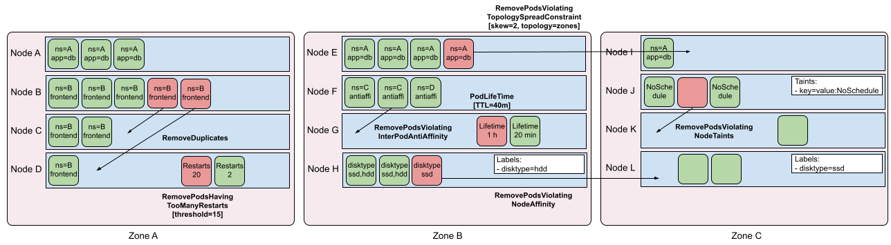
# #
1.4. Disabling CRD Status Report : 노드가 많은 대규모 클러스터의 경우, api 서버에 부하 유발할 수 있으니, bgp status reporting off 권장 - Docs
# 확인 kubectl get ciliumbgpnodeconfigs -o yaml | yq ... "status": { "bgpInstances": [ { "localASN": 65001, "name": "instance-65001", "peers": [ { "establishedTime": "2025-08-16T16:27:08Z", "name": "tor-switch", "peerASN": 65000, "peerAddress": "192.168.10.200", "peeringState": "established", "routeCount": [ { "advertised": 2, "afi": "ipv4", "received": 3, "safi": "unicast" } ], "timers": { "appliedHoldTimeSeconds": 9, "appliedKeepaliveSeconds": 3 } } ] } ] } ... # 설정 helm upgrade cilium cilium/cilium --version 1.18.0 --namespace kube-system --reuse-values \ --set bgpControlPlane.statusReport.enabled=false kubectl -n kube-system rollout restart ds/cilium # 확인 : CiliumBGPNodeConfig Status 정보가 없다! kubectl get ciliumbgpnodeconfigs -o yaml | yq ... "status": {}
1.5. Service(LoadBalancer - ExternalIP) IPs 를 BGP로 광고 - Docs

https://isovalent.com/blog/post/migrating-from-metallb-to-cilium/#l3-announcement-over-bgp # LB IPAM Announcement over BGP 설정 예정으로, 노드의 네트워크 대역이 아니여도 가능! cat << EOF | kubectl apply -f - apiVersion: "cilium.io/v2" kind: CiliumLoadBalancerIPPool metadata: name: "cilium-pool" spec: allowFirstLastIPs: "No" blocks: - cidr: "172.16.1.0/24" EOF kubectl get ippool NAME DISABLED CONFLICTING IPS AVAILABLE AGE cilium-pool false False 254 8s # kubectl patch svc webpod -p '{"spec": {"type": "LoadBalancer"}}' kubectl get svc webpod NAME TYPE CLUSTER-IP EXTERNAL-IP PORT(S) AGE webpod LoadBalancer 10.96.101.213 172.16.1.1 80:32116/TCP 4d2h kubectl get ippool NAME DISABLED CONFLICTING IPS AVAILABLE AGE cilium-pool false False 253 22s kubectl describe svc webpod | grep 'Traffic Policy' External Traffic Policy: Cluster Internal Traffic Policy: Cluster kubectl -n kube-system exec ds/cilium -c cilium-agent -- cilium-dbg service list ... 16 172.16.1.1:80/TCP LoadBalancer 1 => 172.20.0.116:80/TCP (active) 2 => 172.20.1.6:80/TCP (active) 3 => 172.20.2.5:80/TCP (active) # LBIP로 curl 요청 확인 kubectl get svc webpod -o jsonpath='{.status.loadBalancer.ingress[0].ip}' LBIP=$(kubectl get svc webpod -o jsonpath='{.status.loadBalancer.ingress[0].ip}') curl -s $LBIP curl -s $LBIP | grep Hostname curl -s $LBIP | grep RemoteAddr # 모니터링 watch "sshpass -p 'vagrant' ssh vagrant@router ip -c route" # LB EX-IP를 BGP로 광고 설정 cat << EOF | kubectl apply -f - apiVersion: cilium.io/v2 kind: CiliumBGPAdvertisement metadata: name: bgp-advertisements-lb-exip-webpod labels: advertise: bgp spec: advertisements: - advertisementType: "Service" service: addresses: - LoadBalancerIP selector: matchExpressions: - { key: app, operator: In, values: [ webpod ] } EOF kubectl get CiliumBGPAdvertisement NAME AGE bgp-advertisements 2m1s bgp-advertisements-lb-exip-webpod 3s # 확인 # tor-switch-ipv4-[addvertisementType]-[service_name]-[service_namespace]-[service.address]의 형식으로 bgp route-policy가 생성됨 kubectl exec -it -n kube-system ds/cilium -- cilium-dbg bgp route-policies VRouter Policy Name Type Match Peers Match Families Match Prefixes (Min..Max Len) RIB Action Path Actions 65001 allow-local import accept 65001 tor-switch-ipv4-PodCIDR export 192.168.10.200/32 172.20.1.0/24 (24..24) accept 65001 tor-switch-ipv4-Service-webpod-default-LoadBalancerIP export 192.168.10.200/32 172.16.1.1/32 (32..32) accept cilium bgp routes available ipv4 unicast Node VRouter Prefix NextHop Age Attrs k8s-ctr 65001 172.16.1.1/32 0.0.0.0 33s [{Origin: i} {Nexthop: 0.0.0.0}] 65001 172.20.0.0/24 0.0.0.0 4m16s [{Origin: i} {Nexthop: 0.0.0.0}] k8s-w0 65001 172.16.1.1/32 0.0.0.0 33s [{Origin: i} {Nexthop: 0.0.0.0}] 65001 172.20.2.0/24 0.0.0.0 4m4s [{Origin: i} {Nexthop: 0.0.0.0}] k8s-w1 65001 172.16.1.1/32 0.0.0.0 33s [{Origin: i} {Nexthop: 0.0.0.0}] 65001 172.20.1.0/24 0.0.0.0 4m16s [{Origin: i} {Nexthop: 0.0.0.0}] # 현재 BGP가 동작하는 모든 노드로 전달 가능! # 즉, LB EX-IP를 BGP로 advertisement하는 CiliumBGPAdvertisement resource생성으로 LB EX-IP -> webpod ip로 통신이 가능하다. sshpass -p 'vagrant' ssh vagrant@router ip -c route ... 172.16.1.1 nhid 103 proto bgp metric 20 nexthop via 192.168.10.101 dev eth1 weight 1 nexthop via 192.168.10.100 dev eth1 weight 1 nexthop via 192.168.20.100 dev eth2 weight 1 ... sshpass -p 'vagrant' ssh vagrant@router "sudo vtysh -c 'show ip route bgp'" sshpass -p 'vagrant' ssh vagrant@router "sudo vtysh -c 'show ip bgp summary'" sshpass -p 'vagrant' ssh vagrant@router "sudo vtysh -c 'show ip bgp'" Network Next Hop Metric LocPrf Weight Path # * valid, > best, = multipath *> 172.16.1.1/32 192.168.10.100 0 65001 i *= 192.168.20.100 0 65001 i *= 192.168.10.101 0 65001 i sshpass -p 'vagrant' ssh vagrant@router "sudo vtysh -c 'show ip bgp 172.16.1.1/32'" BGP routing table entry for 172.16.1.1/32, version 7 Paths: (3 available, best #1, table default) Advertised to non peer-group peers: 192.168.10.100 192.168.10.101 192.168.20.100 65001 192.168.10.100 from 192.168.10.100 (192.168.10.100) Origin IGP, valid, external, multipath, best (Router ID) Last update: Sat Aug 9 17:50:29 2025 65001 192.168.20.100 from 192.168.20.100 (192.168.20.100) Origin IGP, valid, external, multipath Last update: Sat Aug 9 17:50:29 2025 65001 192.168.10.101 from 192.168.10.101 (192.168.10.101) Origin IGP, valid, external, multipath Last update: Sat Aug 9 17:50:29 2025
1.6. router 에서 LB EX-IP 호출 확인
# LBIP=172.16.1.1 curl -s $LBIP curl -s $LBIP | grep Hostname Hostname: webpod-c847d9b9f-76xkh curl -s $LBIP | grep RemoteAddr RemoteAddr: 192.168.10.100:60556 # 반복 접속 for i in {1..100}; do curl -s $LBIP | grep Hostname; done | sort | uniq -c | sort -nr 37 Hostname: webpod-c847d9b9f-76xkh 33 Hostname: webpod-c847d9b9f-79dff 30 Hostname: webpod-c847d9b9f-8p69w while true; do curl -s $LBIP | egrep 'Hostname|RemoteAddr' ; sleep 0.1; done # k8s-ctr 에서 replicas=2 로 줄여보자 kubectl scale deployment webpod --replicas 2 kubectl get pod -owide NAME READY STATUS RESTARTS AGE IP NODE NOMINATED NODE READINESS GATES curl-pod 1/1 Running 0 4d2h 172.20.0.151 k8s-ctr <none> <none> webpod-c847d9b9f-76xkh 1/1 Running 0 12m 172.20.1.6 k8s-w1 <none> <none> webpod-c847d9b9f-8p69w 1/1 Running 0 12m 172.20.0.116 k8s-ctr <none> <none> cilium bgp routes # router 에서 정보 확인 : k8s-w0 노드에 대상 파드가 배치되지 않았지만, 라우팅 경로 설정이 되어 있다. ip -c route vtysh -c 'show ip bgp summary' vtysh -c 'show ip bgp' vtysh -c 'show ip bgp 172.16.1.1/32' Paths: (3 available, best #1, table default) Advertised to non peer-group peers: 192.168.10.100 192.168.10.101 192.168.20.100 65001 192.168.10.100 from 192.168.10.100 (192.168.10.100) Origin IGP, valid, external, multipath, best (Router ID) Last update: Sun Aug 17 02:01:10 2025 65001 192.168.20.100 from 192.168.20.100 (192.168.20.100) Origin IGP, valid, external, multipath Last update: Sun Aug 17 02:01:10 2025 65001 192.168.10.101 from 192.168.10.101 (192.168.10.101) Origin IGP, valid, external, multipath Last update: Sun Aug 17 02:01:10 2025 vtysh -c 'show ip route bgp' # 반복 접속 : ??? RemoteAddr 이 왜 10.100??? for i in {1..100}; do curl -s $LBIP | grep Hostname; done | sort | uniq -c | sort -nr 55 Hostname: webpod-c847d9b9f-76xkh 45 Hostname: webpod-c847d9b9f-8p69w while true; do curl -s $LBIP | egrep 'Hostname|RemoteAddr' ; sleep 0.1; done Hostname: webpod-697b545f57-swtdz RemoteAddr: 192.168.10.100:40460 Hostname: webpod-697b545f57-87lf2 RemoteAddr: 192.168.10.100:40474 ... # 신규터미널 (3개) : k8s-w1, k8s-w2, k8s-w0 # k8s-w0에는 아무런 tcpdump에 대한 내용이 찍히지 않는다. tcpdump -i eth1 -A -s 0 -nn 'tcp port 80' # k8s-w0 를 경유하거나 등 확인 : ExternalTrafficPolicy 설정 확인 LBIP=172.16.1.1 curl -s $LBIP curl -s $LBIP curl -s $LBIP curl -s $LBIP
1.7. External Traffic Policy (Local) : 소스 IP 보존 - Youtube , Docs & Linux ECMP Hash Policy
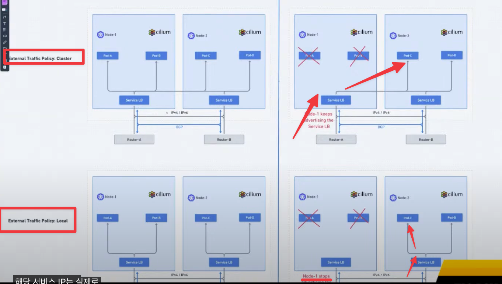
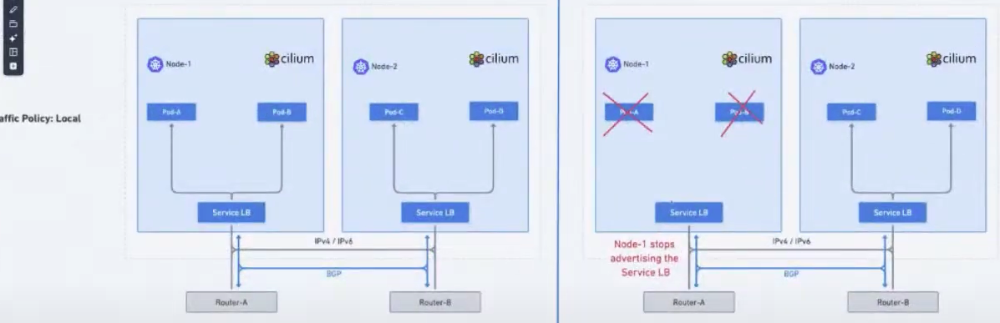
# "externalTrafficPolicy":"Local" 적용 전 watch "sshpass -p 'vagrant' ssh vagrant@router ip -c route" 172.16.1.1 nhid 103 proto bgp metric 20 nexthop via 192.168.10.101 dev eth1 weight 1 nexthop via 192.168.10.100 dev eth1 weight 1 nexthop via 192.168.20.100 dev eth2 weight 1 # k8s-ctr kubectl patch service webpod -p '{"spec":{"externalTrafficPolicy":"Local"}}' # "externalTrafficPolicy":"Local" 적용 후 watch "sshpass -p 'vagrant' ssh vagrant@router ip -c route" 172.16.1.1 nhid 107 proto bgp metric 20 nexthop via 192.168.10.101 dev eth1 weight 1 nexthop via 192.168.10.100 dev eth1 weight 1 # router(frr) : 서비스에 대상 파드가 배치된 노드만 BGP 경로에 출력! vtysh -c 'show ip bgp' *> 172.16.1.1/32 192.168.10.100 0 65001 i *= 192.168.10.101 0 65001 i vtysh -c 'show ip bgp 172.16.1.1/32' Paths: (2 available, best #1, table default) Advertised to non peer-group peers: 192.168.10.100 192.168.10.101 192.168.20.100 65001 192.168.10.100 from 192.168.10.100 (192.168.10.100) Origin IGP, valid, external, multipath, best (Older Path) Last update: Sun Aug 17 10:45:52 2025 65001 192.168.10.101 from 192.168.10.101 (192.168.10.101) Origin IGP, valid, external, multipath Last update: Sun Aug 17 10:45:52 2025 vtysh -c 'show ip route bgp' ip -c route # 신규터미널 (3개) : k8s-w1, k8s-w2, k8s-w0 tcpdump -i eth1 -A -s 0 -nn 'tcp port 80' # 현재 실습 환경 경우 반복 접속 시 한쪽 노드로 선택되고, 소스IP가 보존! LBIP=172.16.1.1 curl -s $LBIP for i in {1..100}; do curl -s $LBIP | grep Hostname; done | sort | uniq -c | sort -nr while true; do curl -s $LBIP | egrep 'Hostname|RemoteAddr' ; sleep 0.1; done ## 아래 실행 시 tcpdump 에 다른 노드 선택되는지 확인! 안될수도 있음! curl -s $LBIP --interface 10.10.1.200 curl -s $LBIP --interface 10.10.2.200- Linux ECMP Hash Policy 설정
# 리눅스 커널은 기본적으로 L3(목적지 IP 기반) 해시를 사용합니다. 보다 정교한 부하분산을 원하면 L4 해시 (IP + 포트) 기반으로 설정 # 1 : source IP, dest IP, source port, dest port 기반 hash (more granular)로 변경 sudo sysctl -w net.ipv4.fib_multipath_hash_policy=1 echo "net.ipv4.fib_multipath_hash_policy=1" >> /etc/sysctl.conf # for i in {1..100}; do curl -s $LBIP | grep Hostname; done | sort | uniq -c | sort -nr 59 Hostname: webpod-697b545f57-87lf2 41 Hostname: webpod-697b545f57-swtdz # k8s-ctr kubectl scale deployment webpod --replicas 3 kubectl get pod -owide # router ip -c route for i in {1..100}; do curl -s $LBIP | grep Hostname; done | sort | uniq -c | sort -nr 37 Hostname: webpod-697b545f57-bgpv9 35 Hostname: webpod-697b545f57-87lf2 28 Hostname: webpod-697b545f57-swtdz💡ExternalTrafficPolicy(Local) 설정 시, Router 의 ECMP 에서 Hash Policy 경로 결정과 요청 트래픽 환경(소스 IP, 포트 등)으로 특정 동일 노드로만 라우팅 될 수 있음 → 대체로 Hash Policy 를 L4 수준 설정 권장.
(정보) ECMP (equal cost multipath) is a method to utilize multiple same-cost paths to route a packet to a destination - Blog

https://www.cisco.com/c/en/us/solutions/collateral/data-center-virtualization/application-centric-infrastructure/manage-ecmp-scale-aci-wp.html - 실제 라우팅 처리 되는 부하 분산 알고리즘은 해당 HW/SW 다를 수 있음. 예) 목적지 IP/Port 다를 경우 다를 경로로 전달, per-packer 별 등등.
1.8. (중급) 인입 시 다양한 방식 비교 +
도전과제5포함- BGP(ECMP) + Service(LB EX-IP, ExternalTrafficPolicy:Local) + SNAT + Random vs.
- BGP(ECMP) + Service(LB EX-IP, ExternalTrafficPolicy:Cluster) + DSR + Maglev 2가지 외부 인입 방식 장단점(성능, Failover 등) 비교
도전과제5L2 Announcement + Service(LB EX-IP, ExternalTrafficPolicy:Cluster) + DSR + Maglev 설정 후 인입 과정 분석
- BGP(ECMP) + Service(LB EX-IP, ExternalTrafficPolicy:Local) + SNAT + Random → 권장 방식!
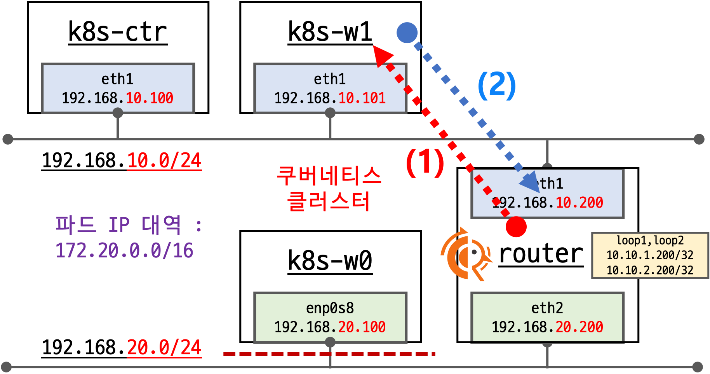
(1) Router 에서 BGP ECMP MultiPath로 파드가 있는 노드로만 전달
(2) 해당 Service 가 ExternalTrafficPolicy:Local 로, 소스IP 보존되고 대상 파드가 응답 후 Router로 바로 리턴
- BGP(ECMP) + Service(LB EX-IP, ExternalTrafficPolicy:Cluster) + SNAT → 비권장 방식
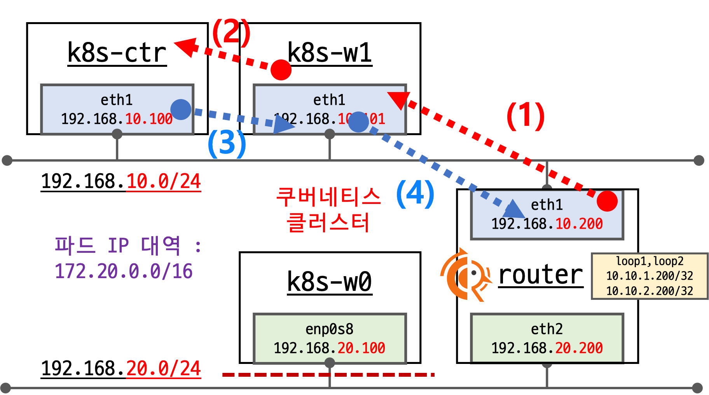
(1) Router 에서 BGP ECMP MultiPath로 Cilium BGP Peer인 모든 노드로 전달
(2) 해당 Service 가 ExternalTrafficPolicy:Cluster로, 하필 다른 노드(k8s-ctr)의 파드로 요청을 전달
(3) 해당 노드의 파드가 요청을 처리하고 응답 리턴을 위해서, NAT를 수행했던 노드(k8s-w1)로 다시 전달
(4) 외부 인입을 받아서 NAT를 수행했던 연결 정보를 확인해서, Reverse NAT를 수행해서 최종 응답을 리턴
- BGP(ECMP) + Service(LB EX-IP, ExternalTrafficPolicy:Cluster) + DSR + Maglev - Docs → 그나마 괜찮은 방식
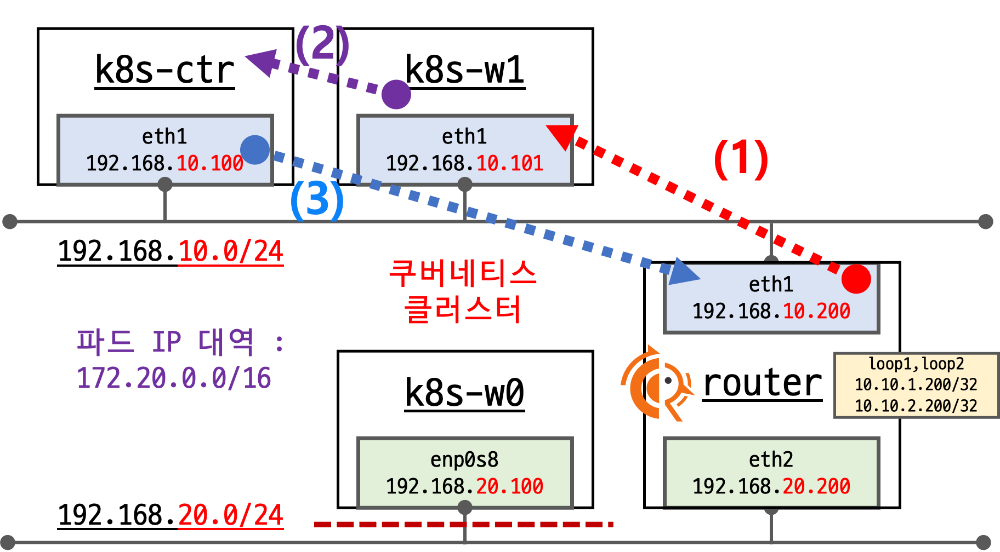
(1) Router 에서 BGP ECMP MultiPath로 Cilium BGP Peer인 모든 노드로 전달
(2) 해당 Service 가 ExternalTrafficPolicy:Cluster로, 하필 다른 노드(k8s-ctr)의 파드로 요청을 전달
- 이때 DSR 동작으로 전달된 노드에서 바로 리턴하기 위해서, 최초 접속했던 클라이언트의 정보를 GENEVE 헤더를 활용해서 전달
- 장애 및 백엔드 대상 변경에서 클라이언트의 세션에 대한 똑똑한 유지를 위해서 Maglev 알고리즘을 사용
(3) 해당 노드의 파드가 요청을 처리하고 GEVEVE 헤더 정보를 활용하여 Reverse NAT를 수행해서 최종 응답을 바로 리턴
# 현재 설정 확인 kubectl exec -it -n kube-system ds/cilium -- cilium status --verbose ... Mode: SNAT Backend Selection: Random Session Affinity: Enabled ... # 현재 실습 환경에서 설정 modprobe geneve # modprobe geneve lsmod | grep -E 'vxlan|geneve' geneve 45056 0 ip6_udp_tunnel 16384 1 geneve udp_tunnel 36864 1 geneve for i in w1 w0 ; do echo ">> node : k8s-$i <<"; sshpass -p 'vagrant' ssh vagrant@k8s-$i sudo modprobe geneve ; echo; done for i in w1 w0 ; do echo ">> node : k8s-$i <<"; sshpass -p 'vagrant' ssh vagrant@k8s-$i sudo lsmod | grep -E 'vxlan|geneve' ; echo; done helm upgrade cilium cilium/cilium --version 1.18.0 --namespace kube-system --reuse-values \ --set tunnelProtocol=geneve --set loadBalancer.mode=dsr --set loadBalancer.dsrDispatch=geneve \ --set loadBalancer.algorithm=maglev kubectl -n kube-system rollout restart ds/cilium # 설정 확인 kubectl exec -it -n kube-system ds/cilium -- cilium status --verbose ... Mode: DSR DSR Dispatch Mode: Geneve Backend Selection: Maglev (Table Size: 16381) Session Affinity: Enabled ... # Cluster 로 기본 설정 원복 kubectl patch svc webpod -p '{"spec":{"externalTrafficPolicy":"Cluster"}}' # k8s-ctr, k8s-w1, k8s-w0 모두 tcpdump 실행 tcpdump -i eth1 -w /tmp/dsr.pcap # router curl -s $LBIP curl -s $LBIP curl -s $LBIP curl -s $LBIP curl -s $LBIP # Host 에 pcap 다운로드 후 wireshark 로 열여서 확인 vagrant plugin install vagrant-scp vagrant scp k8s-ctr:/tmp/dsr.pcap .- 최초 192.168.10.101(k8s-w1)로 인입 후 하필 192.168.10.100(k8s-ctr)에 전달. 전달 시 최초 클라이언트 접속 정보를 GENEVE 헤더에 담아서 전달
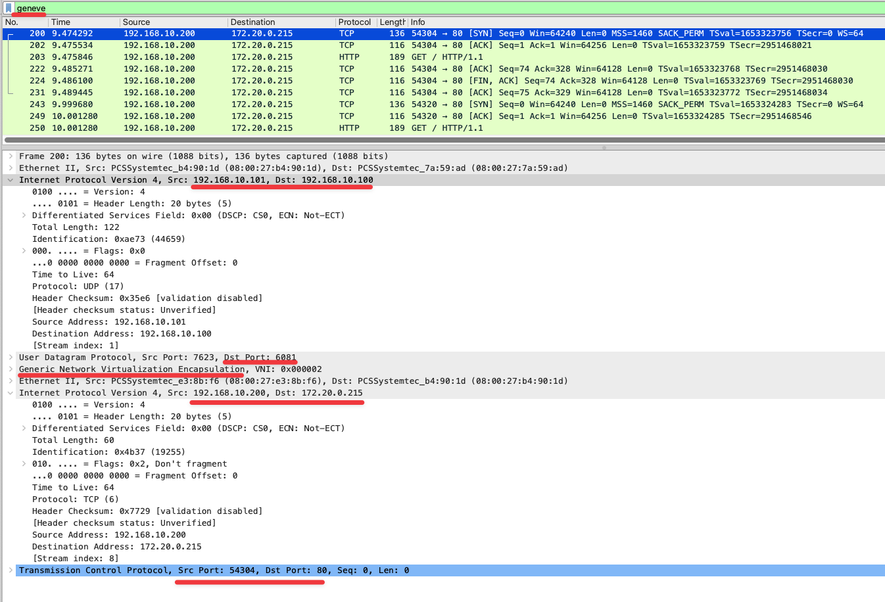
- 아래 k8s-ctr 에서 바로 외부 클라이언트(router)로 리턴하는 패킷 정보 확인. D.IP 와 D.Port 가 최초 요청 시 S.IP, S.Port 와 동일(유지)를 확인
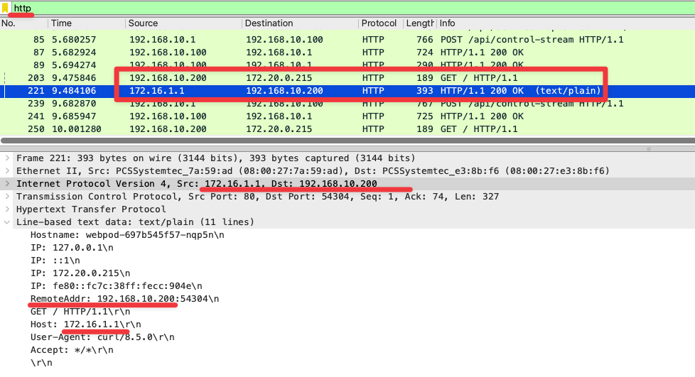
1.9. (고급) Service 추가 후 Node 별 분산 인입 설정
- 목표
- Service1 LB EX-IP 는 az1=true 로 인입 가능
- Service2 LB EX-IP 는 az2=true 로 인입 가능
- AZ=1 소속 : k8s-ctr, k8s-w1
- AZ=2 소속 : k8s-w0
- 실습 환경 마련 : node label
# node 별 label 설정 kubectl label nodes k8s-ctr k8s-w1 az1=true kubectl label nodes k8s-w0 az2=true # 확인 kubectl get node -l az1=true NAME STATUS ROLES AGE VERSION k8s-ctr Ready control-plane 4d13h v1.33.2 k8s-w1 Ready <none> 4d13h v1.33.2 kubectl get node -l az2=true NAME STATUS ROLES AGE VERSION k8s-w0 Ready <none> 4d13h v1.33.2
- 실습 환경 마련 : Service 추가
# cat << EOF | kubectl apply -f - apiVersion: apps/v1 kind: Deployment metadata: name: netshoot-web labels: app: netshoot-web spec: replicas: 3 selector: matchLabels: app: netshoot-web template: metadata: labels: app: netshoot-web spec: terminationGracePeriodSeconds: 0 containers: - name: netshoot image: nicolaka/netshoot ports: - containerPort: 8080 env: - name: POD_NAME valueFrom: fieldRef: fieldPath: metadata.name command: ["sh", "-c"] args: - | while true; do { echo -e "HTTP/1.1 200 OK\r\nContent-Type: text/plain\r\n\r\nOK from \$POD_NAME"; } | nc -l -p 8080 -q 1; done EOF # cat << EOF | kubectl apply -f - apiVersion: v1 kind: Service metadata: name: netshoot-web labels: app: netshoot-web spec: type: LoadBalancer selector: app: netshoot-web ports: - name: http port: 80 targetPort: 8080 EOF # kubectl get svc,ep netshoot-web # lb type ip하나 더 사용 kubectl get ippool NAME DISABLED CONFLICTING IPS AVAILABLE AGE cilium-pool false False 252 12h
- Cilium BGP 설정 : Service 1
# 모니터링 (router) watch "vtysh -c 'show ip route bgp'" # 기존 BGP 설정 제거 kubectl delete ciliumbgpadvertisements,ciliumbgppeerconfigs,ciliumbgpclusterconfigs --all # Service 1 광고를 위한 Cilium BGP cat << EOF | kubectl apply -f - apiVersion: cilium.io/v2 kind: CiliumBGPAdvertisement metadata: name: service1-bgp-advertisements labels: advertise: service1-bgp spec: advertisements: - advertisementType: "PodCIDR" - advertisementType: "Service" service: addresses: - LoadBalancerIP selector: matchExpressions: - { key: az1, operator: In, values: [ "true" ] } --- apiVersion: cilium.io/v2 kind: CiliumBGPPeerConfig metadata: name: service1-cilium-peer spec: timers: holdTimeSeconds: 9 keepAliveTimeSeconds: 3 ebgpMultihop: 2 gracefulRestart: enabled: true restartTimeSeconds: 15 families: - afi: ipv4 safi: unicast advertisements: matchLabels: advertise: service1-bgp --- apiVersion: cilium.io/v2 kind: CiliumBGPClusterConfig metadata: name: service1-cilium-bgp spec: nodeSelector: matchLabels: "az1": "true" bgpInstances: - name: "instance-65001" localASN: 65001 peers: - name: "tor-switch" peerASN: 65000 peerAddress: 192.168.10.200 # router ip address peerConfigRef: name: "service1-cilium-peer" EOF # 모니터링 (router) watch "vtysh -c 'show ip route bgp'" B>* 172.20.0.0/24 [20/0] via 192.168.10.100, eth1, weight 1, 00:00:18 B>* 172.20.1.0/24 [20/0] via 192.168.10.101, eth1, weight 1, 00:00:18 # Service 1 광고를 위한 label 설정 kubectl label service webpod az1=true # 모니터링 (router) # webpod service이 "externalTrafficPolicy: cluster"로 설정되어있음에도 불구하고 CiliumBGPClusterConfig에 의해 az1: true인 node만 선택되어 bgp에 의해 두개의 node만 advertise 됨. # 결과적으로 webpod service로 들어오는 traffic은 설정대로 k8s-ctr, k8s-w1에 있는 node(az1: true)의 pod로만 routing된다. watch "vtysh -c 'show ip route bgp'" B>* 172.16.1.1/32 [20/0] via 192.168.10.100, eth1, weight 1, 00:01:00 * via 192.168.10.101, eth1, weight 1, 00:01:00 B>* 172.20.0.0/24 [20/0] via 192.168.10.100, eth1, weight 1, 00:00:18 B>* 172.20.1.0/24 [20/0] via 192.168.10.101, eth1, weight 1, 00:00:18
- Cilium BGP 설정 : Service 2
# 모니터링 (router) watch "vtysh -c 'show ip route bgp'" # Service 2 광고를 위한 Cilium BGP cat << EOF | kubectl apply -f - apiVersion: cilium.io/v2 kind: CiliumBGPAdvertisement metadata: name: service2-bgp-advertisements labels: advertise: service2-bgp spec: advertisements: - advertisementType: "PodCIDR" - advertisementType: "Service" service: addresses: - LoadBalancerIP selector: matchExpressions: - { key: az2, operator: In, values: [ "true" ] } --- apiVersion: cilium.io/v2 kind: CiliumBGPPeerConfig metadata: name: service2-cilium-peer spec: timers: holdTimeSeconds: 9 keepAliveTimeSeconds: 3 ebgpMultihop: 2 gracefulRestart: enabled: true restartTimeSeconds: 15 families: - afi: ipv4 safi: unicast advertisements: matchLabels: advertise: service2-bgp --- apiVersion: cilium.io/v2 kind: CiliumBGPClusterConfig metadata: name: service2-cilium-bgp spec: nodeSelector: matchLabels: "az2": "true" bgpInstances: - name: "instance-65001" localASN: 65001 peers: - name: "tor-switch" peerASN: 65000 peerAddress: 192.168.10.200 # router ip address peerConfigRef: name: "service2-cilium-peer" EOF # 모니터링 (router) watch "vtysh -c 'show ip route bgp'" B>* 172.16.1.1/32 [20/0] via 192.168.10.100, eth1, weight 1, 00:01:00 * via 192.168.10.101, eth1, weight 1, 00:01:00 B>* 172.20.0.0/24 [20/0] via 192.168.10.100, eth1, weight 1, 00:00:18 B>* 172.20.1.0/24 [20/0] via 192.168.10.101, eth1, weight 1, 00:00:18 B>* 172.20.2.0/24 [20/0] via 192.168.20.100, eth2, weight 1, 00:00:05 # Service 2 광고를 위한 label 설정 kubectl label service netshoot-web az2=true # 모니터링 (router) # netshoot-web service ip => k8s-w0 노드로의 routing 추가됨 watch "vtysh -c 'show ip route bgp'" B>* 172.16.1.1/32 [20/0] via 192.168.10.100, eth1, weight 1, 00:01:00 * via 192.168.10.101, eth1, weight 1, 00:01:00 B>* 172.16.1.2/32 [20/0] via 192.168.20.100, eth2, weight 1, 00:04:31 B>* 172.20.0.0/24 [20/0] via 192.168.10.100, eth1, weight 1, 00:00:18 B>* 172.20.1.0/24 [20/0] via 192.168.10.101, eth1, weight 1, 00:00:18 B>* 172.20.2.0/24 [20/0] via 192.168.20.100, eth2, weight 1, 00:00:05 # 만약 externalTrafficPolicy(local) 설정 상태에서, replicas 1로 축소 시, 해당 파드가 k8s-ctr, k8s-w1 에 있을 경우 어떻게 되는가? kubectl patch service netshoot-web -p '{"spec":{"externalTrafficPolicy":"Local"}}' kubectl scale deployment netshoot-web --replicas 1 kubectl get po -o wide NAME READY STATUS RESTARTS AGE IP NODE NOMINATED NODE READINESS GATES ... netshoot-web-5c59d94bd4-q2xhd 1/1 Running 0 30m 172.20.1.122 k8s-w1 <none> <none> # 모니터링 (router) # 위와 같이 k8s-w1에만 netshoot-web pod가 존재하게되면, k8s-w1은 az1: true label을 갖고있는 node로 # service2-cilium-peer라는 CiliumBGPAdvertisement로 advertise 될 수 없는 node이고 netshoot-web service가 externalTrafficPolicy(local)이므로 # cilium bgp입장에서 더 이상 netshoot-web service가 routing 할 수 있는 노드가 없다고 판단되어 아래와 같이 routing되지 않는다. watch "vtysh -c 'show ip route bgp'" B>* 172.16.1.1/32 [20/0] via 192.168.10.100, eth1, weight 1, 00:12:21 * via 192.168.10.101, eth1, weight 1, 00:12:21 B>* 172.20.0.0/24 [20/0] via 192.168.10.100, eth1, weight 1, 00:13:06 B>* 172.20.1.0/24 [20/0] via 192.168.10.101, eth1, weight 1, 00:13:06 B>* 172.20.2.0/24 [20/0] via 192.168.20.100, eth2, weight 1, 00:03:26 ------------------------------------- # router LBIP=172.16.1.2 curl -s $LBIP # k8s-w1 node 에 label 추가 설정 시 어떻게 될까? → Service(LB EX-IP) 기준해서 특정 node 를 중복해서 BGP 광고는 현재는 불가 kubectl label nodes k8s-w1 az2=true # 확인 kubectl get node -l az1=true kubectl get node -l az2=true # 모니터링 (router) # 여전히 netshoot-web svc에 대한 routing 정보는 보이지 않는다. watch "vtysh -c 'show ip route bgp'" ... B>* 172.16.1.1/32 [20/0] via 192.168.10.100, eth1, weight 1, 00:56:28 * via 192.168.10.101, eth1, weight 1, 00:56:28 B>* 172.20.0.0/24 [20/0] via 192.168.10.100, eth1, weight 1, 00:57:13 B>* 172.20.1.0/24 [20/0] via 192.168.10.101, eth1, weight 1, 00:57:13 B>* 172.20.2.0/24 [20/0] via 192.168.20.100, eth2, weight 1, 00:07:08 # k8s-w1 node 에 az1 label 제거하면 어떻게 될까? -> label 중복 제거 == 중복 BGP advertise 제거 kubectl label nodes k8s-w1 az1- # 확인 kubectl get node -l az1=true kubectl get node -l az2=true # 모니터링 (router) # node label에 중복을 제거하고 az=true만 남기면 아래와 같이 webpod svc에 대한 routing이 하나 사라지고(k8s-w1의 label을 az2=true로 변경했기때문) # netshoot-web svc에 대한 routing이 하나 추가된다. watch "vtysh -c 'show ip route bgp'" ... B>* 172.16.1.1/32 [20/0] via 192.168.10.100, eth1, weight 1, 00:00:10 B>* 172.16.1.2/32 [20/0] via 192.168.10.101, eth1, weight 1, 00:00:07 # netshoot-web svc에 대한 routing이 추가됨 B>* 172.20.0.0/24 [20/0] via 192.168.10.100, eth1, weight 1, 00:57:41 B>* 172.20.1.0/24 [20/0] via 192.168.10.101, eth1, weight 1, 00:00:07 B>* 172.20.2.0/24 [20/0] via 192.168.20.100, eth2, weight 1, 00:07:36 # 통신 테스트 curl -s $LBIP OK from netshoot-web-5c59d94bd4-q2xhd
주의사항: 노드 별 특정 Service(LB EX-IP) 전파 그룹을 묶어야 함 → Service(LB EX-IP) 기준해서 특정 node 를 중복해서 BGP 광고는 현재는 불가능!- 현재 Cilium CR 리소스 연관 관계와 설정의 구조 상, 노드가 동일한 BGP Router 와 연동 시, 단일 CiliumBGPClusterConfig 만 적용이 가능하다.
- 즉, CiliumBGPClusterConfig Spec에 nodeSelect 로 특정 노드들을 묶을 수 있고, peerConfigRef 를 통해 CiliumBGPPeerConfig 이 적용되며, 다시 advertisements.matchLabels.advertise 를 통해 CiliumBGPAdvertisement 를 적용한다.
- 이후 CiliumBGPAdvertisement 에 있는 advertisements 를 통해 특정 Service 를 BGP로 광고 할 수 있다.
- 목표
- 실습 환경 소개 : BOX_VERSION = "
{kind=link}
{kind=link}
{kind=link}
{kind=link}
{kind=link}
{kind=link}
{kind=link}
{kind=link}
{kind=link}
{kind=link}
{kind=link}
- Kind
kind 소개 : ‘도커 IN 도커 docker in docker’로 쿠버네티스 클러스터 환경을 구성 - Link
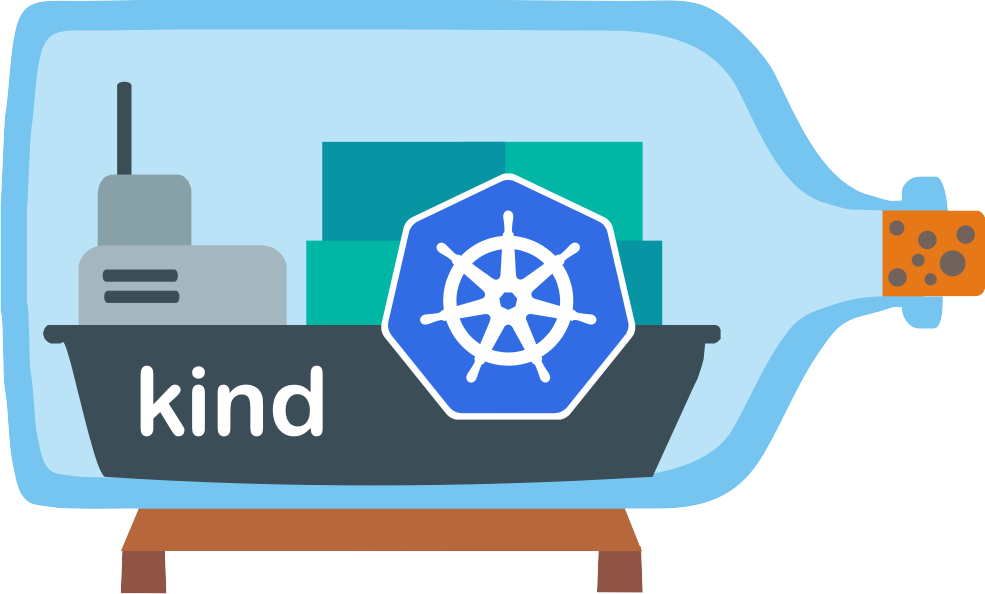
- kind or kubernetes in docker is a suite of tooling for local Kubernetes “clusters” where each “node” is a Docker container
- kind is targeted at testing Kubernetes , kind supports multi-node (including HA) clusters
- kind uses kubeadm to configure cluster nodes.

그림 출처: https://kind.sigs.k8s.io/
kind 설치 : macOS 사용자
- kind 및 툴 설치
- 필수 툴 설치
# Install Kind brew install kind kind --version # Install kubectl brew install kubernetes-cli kubectl version --client=true ## kubectl -> k 단축키 설정 echo "alias kubectl=kubecolor" >> ~/.zshrc # Install Helm brew install helm helm version
- (권장) 유용한 툴 설치
# 툴 설치 brew install krew brew install kube-ps1 brew install kubectx # kubectl 출력 시 하이라이트 처리 brew install kubecolor echo "alias kubectl=kubecolor" >> ~/.zshrc echo "compdef kubecolor=kubectl" >> ~/.zshrc
- 필수 툴 설치
kind 기본 사용 - 클러스터 배포 및 확인
🚫회사에서 사용 중인 kubeconfig 가 있다면, 미리 kubeconfig 백업 후 kind 실습을 하시거나 혹은 아래 kubeconfig 변수 지정 사용 권장
(옵션) 별도 kubeconfig 지정 후 사용
# 방안1 : 환경변수 지정 export KUBECONFIG=/Users/<Username>/Downloads/kind/config # 방안2 : 혹은 --kubeconfig ./config 지정 가능 # 클러스터 생성 kind create cluster # kubeconfig 파일 확인 ls -l /Users/<Username>/Downloads/kind/config -rw------- 1 <Username> staff 5608 4 24 09:05 /Users/<Username>/Downloads/kind/config # 파드 정보 확인 kubectl get pod -A # 클러스터 삭제 kind delete cluster unset KUBECONFIG
# 클러스터 배포 전 확인 docker ps # Create a cluster with kind kind create cluster # 클러스터 배포 확인 kind get clusters kind get nodes kubectl cluster-info # 노드 정보 확인 kubectl get node -o wide # 파드 정보 확인 kubectl get pod -A kubectl get componentstatuses # 컨트롤플레인 (컨테이너) 노드 1대가 실행 docker ps docker images # kube config 파일 확인 cat ~/.kube/config 혹은 cat $KUBECONFIG # KUBECONFIG 변수 지정 사용 시 # nginx 파드 배포 및 확인 : 컨트롤플레인 노드인데 파드가 배포 될까요? kubectl run nginx --image=nginx:alpine kubectl get pod -owide # 노드에 Taints 정보 확인 kubectl describe node | grep Taints Taints: <none> # 클러스터 삭제 kind delete cluster # kube config 삭제 확인 cat ~/.kube/config 혹은 cat $KUBECONFIG # KUBECONFIG 변수 지정 사용 시
- kind 및 툴 설치
kind 설치 : Windows (WSL2) 사용
- WSL 2 설치 + Ubuntu 배포판 설치 - Docs , 설명서

- https://velog.io/@pikamon/Linux-3
- Powershell 관리자 권한으로 실행
# DISM(배포 이미지 서비스 및 관리) 명령어로 Microsoft-Windows-Subsystem-Linux 기능을 활성화 dism.exe /online /enable-feature /featurename:Microsoft-Windows-Subsystem-Linux /all /norestart # DISM 명령어로 VirtualMachinePlatform 기능을 활성화 dism.exe /online /enable-feature /featurename:VirtualMachinePlatform /all /norestart # wsl 설치 wsl --install # 기본값 WSL 2 버전 설정 wsl --set-default-version 2 # wsl 업데이트 wsl --update
- 윈도우 OS 재부팅
- Powershell 관리자 권한으로 실행
# 설치 가능한 배포판 확인 wsl --list --online # Ubuntu 배포판 설치 wsl --install Ubuntu-24.04 ... Enter new UNIX username: <각자 Ubuntu 사용 계정> New password: <해당 계정 암호> Retype new password: <해당 계정 암호> passwd: password updated successfully Installation successful! To run a command as administrator (user "root"), use "sudo <command>". --------------------------------------- # 기본 정보 확인 hostnamectl whoami id pwd # apt 업데이트 sudo apt update sudo apt install jq htop curl wget ca-certificates net-tools -y ifconfig eth0 ping -c 1 8.8.8.8 # 빠져나오기 $ exit --------------------------------------- # 설치된 배포판 확인 wsl -l -v # Ubuntu 재진입 wsl
- Powershell 관리자 권한으로 실행
- https://velog.io/@pikamon/Linux-3
- WSL2 에 Docker 설치 - Docs
# WSL2 에 Docker 설치 : 아래 스크립트 실행 후 20초 대기하면 스크립트 실행 됨 curl -fsSL https://get.docker.com -o get-docker.sh sudo sh ./get-docker.sh ... # 설치 확인 docker info docker ps sudo systemctl status docker cat /etc/group | grep docker
- (옵션) Windows Terminal 설치 및 꾸미기(개발 환경 편리하게)
- (옵션) VSCODE 설치 - Download , WSL-VSCODE
- WSL 배포에서 프로젝트를 열려면 배포의 명령줄을 열고 다음을 입력합니다.
code .code . Installing VS Code Server for Linux x64 (f1a4fb101478ce6ec82fe9627c43efbf9e98c813) Downloading: 100% Unpacking: 100% Unpacked 1773 files and folders to /home/gasida/.vscode-server/bin/f1a4fb101478ce6ec82fe9627c43efbf9e98c813. Looking for compatibility check script at /home/gasida/.vscode-server/bin/f1a4fb101478ce6ec82fe9627c43efbf9e98c813/bin/helpers/check-requirements.sh Running compatibility check script Compatibility check successful (0)
- VSCODE 개발 편리 설정 : auto-save 등등
- WSL 배포에서 프로젝트를 열려면 배포의 명령줄을 열고 다음을 입력합니다.
- WSL2 에 kind 및 관리 툴 설치
# 기본 사용자 디렉터리 이동 cd $PWD pwd # sudo systemctl stop apparmor && sudo systemctl disable apparmor # sudo apt update && sudo apt-get install bridge-utils net-tools jq tree unzip kubectx kubecolor -y # Install Kind curl -Lo ./kind https://kind.sigs.k8s.io/dl/v0.29.0/kind-linux-amd64 chmod +x ./kind sudo mv ./kind /usr/local/bin/kind kind --version # Install kubectl curl -LO "https://dl.k8s.io/release/$(curl -L -s https://dl.k8s.io/release/stable.txt)/bin/linux/amd64/kubectl" chmod +x kubectl sudo mv ./kubectl /usr/bin sudo kubectl version --client=true # Install Helm curl -s https://raw.githubusercontent.com/helm/helm/master/scripts/get-helm-3 | bash helm version # Source the completion source <(kubectl completion bash) echo 'source <(kubectl completion bash)' >> ~/.bashrc # Alias kubectl to k echo 'alias k=kubectl' >> ~/.bashrc echo 'complete -o default -F __start_kubectl k' >> ~/.bashrc # Install Kubeps & Setting PS1 git clone https://github.com/jonmosco/kube-ps1.git echo -e "source $PWD/kube-ps1/kube-ps1.sh" >> ~/.bashrc cat <<"EOT" >> ~/.bashrc KUBE_PS1_SYMBOL_ENABLE=true function get_cluster_short() { echo "$1" | cut -d . -f1 } KUBE_PS1_CLUSTER_FUNCTION=get_cluster_short KUBE_PS1_SUFFIX=') ' PS1='$(kube_ps1)'$PS1 EOT # .bashrc 적용을 위해서 logout 후 터미널 다시 접속 하자 exit
- kind 기본 사용 - 클러스터 배포 및 확인
# 클러스터 배포 전 확인 docker ps # Create a cluster with kind kind create cluster # 클러스터 배포 확인 kind get clusters kind get nodes kubectl cluster-info # 노드 정보 확인 kubectl get node -o wide # 파드 정보 확인 kubectl get pod -A kubectl get componentstatuses # 컨트롤플레인 (컨테이너) 노드 1대가 실행 docker ps docker images # kube config 파일 확인 cat ~/.kube/config 혹은 cat $KUBECONFIG # KUBECONFIG 변수 지정 사용 시 # nginx 파드 배포 및 확인 : 컨트롤플레인 노드인데 파드가 배포 될까요? kubectl run nginx --image=nginx:alpine kubectl get pod -owide # 노드에 Taints 정보 확인 kubectl describe node | grep Taints Taints: <none> # 클러스터 삭제 kind delete cluster # kube config 삭제 확인 cat ~/.kube/config 혹은 cat $KUBECONFIG # KUBECONFIG 변수 지정 사용 시
- WSL 2 설치 + Ubuntu 배포판 설치 - Docs , 설명서
kind 로 k8s 배포 : macOS 사용자
- 기본 정보 확인
# 클러스터 배포 전 확인 docker ps # Create a cluster with kind kind create cluster --name myk8s --image kindest/node:v1.32.2 --config - <<EOF kind: Cluster apiVersion: kind.x-k8s.io/v1alpha4 nodes: - role: control-plane extraPortMappings: - containerPort: 30000 hostPort: 30000 - containerPort: 30001 hostPort: 30001 - containerPort: 30002 hostPort: 30002 - containerPort: 30003 hostPort: 30003 - role: worker - role: worker - role: worker EOF # 확인 kind get nodes --name myk8s kubens default # kind 는 별도 도커 네트워크 생성 후 사용 : 기본값 172.18.0.0/16 docker network ls docker inspect kind | jq # k8s api 주소 확인 : 어떻게 로컬에서 접속이 되는 걸까? kubectl cluster-info # 노드 정보 확인 : CRI 는 containerd 사용 kubectl get node -o wide # 파드 정보 확인 : CNI 는 kindnet 사용 kubectl get pod -A -o wide # 네임스페이스 확인 >> 도커 컨테이너에서 배운 네임스페이스와 다릅니다! kubectl get namespaces # 컨트롤플레인/워커 노드(컨테이너) 확인 : 도커 컨테이너 이름은 myk8s-control-plane , myk8s-worker/2/3 임을 확인 docker ps docker images docker exec -it myk8s-control-plane ss -tnlp # 디버그용 내용 출력에 ~/.kube/config 권한 인증 로드 kubectl get pod -v6 # kube config 파일 확인 cat ~/.kube/config 혹은 cat $KUBECONFIG
- (참고) 클러스터 삭제
# 클러스터 삭제 kind delete cluster --name myk8s docker ps cat ~/.kube/config
- 기본 정보 확인
kind 로 k8s 배포 : Windows (WSL2) 사용자
- 기본 정보 확인
# 클러스터 배포 전 확인 docker ps # Create a cluster with kind kind create cluster --name myk8s --image kindest/node:v1.32.2 --config - <<EOF kind: Cluster apiVersion: kind.x-k8s.io/v1alpha4 nodes: - role: control-plane extraPortMappings: - containerPort: 30000 hostPort: 30000 - containerPort: 30001 hostPort: 30001 - containerPort: 30002 hostPort: 30002 - containerPort: 30003 hostPort: 30003 - role: worker - role: worker - role: worker EOF # 확인 kind get nodes --name myk8s kubens default # kind 는 별도 도커 네트워크 생성 후 사용 : 기본값 172.18.0.0/16 docker network ls docker inspect kind | jq # k8s api 주소 확인 : 어떻게 로컬에서 접속이 되는 걸까? kubectl cluster-info # 노드 정보 확인 : CRI 는 containerd 사용 kubectl get node -o wide # 파드 정보 확인 : CNI 는 kindnet 사용 kubectl get pod -A -o wide # 네임스페이스 확인 >> 도커 컨테이너에서 배운 네임스페이스와 다릅니다! kubectl get namespaces # 컨트롤플레인/워커 노드(컨테이너) 확인 : 도커 컨테이너 이름은 myk8s-control-plane , myk8s-worker/2/3 임을 확인 docker ps docker images docker exec -it myk8s-control-plane ss -tnlp # 디버그용 내용 출력에 ~/.kube/config 권한 인증 로드 kubectl get pod -v6 # kube config 파일 확인 : "server: https://127.0.0.1:YYYYY" 127.0.0.1:Port로 접속 가능을 확인! cat ~/.kube/config ls -l ~/.kube/config
- (참고) 클러스터 삭제
# 클러스터 삭제 kind delete cluster --name myk8s docker ps cat ~/.kube/config
- 기본 정보 확인
{kind=link}
- ClusterMesh
** 현재 1.18 버전의 ClusterMesh 분산 동작이 조금 이상한 것으로 보입니다. 스터디에서는 1.17.6 버전을 통해 진행합니다.
3.1. kind k8s 클러스터 west, east 배포 - Docs
# kind create cluster --name west --image kindest/node:v1.33.2 --config - <<EOF kind: Cluster apiVersion: kind.x-k8s.io/v1alpha4 nodes: - role: control-plane extraPortMappings: - containerPort: 30000 # sample apps hostPort: 30000 - containerPort: 30001 # hubble ui hostPort: 30001 - role: worker extraPortMappings: - containerPort: 30002 # sample apps hostPort: 30002 networking: podSubnet: "10.0.0.0/16" serviceSubnet: "10.2.0.0/16" disableDefaultCNI: true kubeProxyMode: none EOF # 설치 확인 kubectl ctx kubectl get node kubectl get pod -A # 노드에 기본 툴 설치 docker exec -it west-control-plane sh -c 'apt update && apt install tree psmisc lsof wget net-tools dnsutils tcpdump ngrep iputils-ping git -y' docker exec -it west-worker sh -c 'apt update && apt install tree psmisc lsof wget net-tools dnsutils tcpdump ngrep iputils-ping git -y' # kind create cluster --name east --image kindest/node:v1.33.2 --config - <<EOF kind: Cluster apiVersion: kind.x-k8s.io/v1alpha4 nodes: - role: control-plane extraPortMappings: - containerPort: 31000 # sample apps hostPort: 31000 - containerPort: 31001 # hubble ui hostPort: 31001 - role: worker extraPortMappings: - containerPort: 31002 # sample apps hostPort: 31002 networking: podSubnet: "10.1.0.0/16" serviceSubnet: "10.3.0.0/16" disableDefaultCNI: true kubeProxyMode: none EOF # 설치 확인 kubectl config get-contexts CURRENT NAME CLUSTER AUTHINFO NAMESPACE * kind-east kind-east kind-east kind-west kind-west kind-west kubectl config set-context kind-east kubectl get node -v=6 --context kind-east kubectl get node -v=6 kubectl get node -v=6 --context kind-west cat ~/.kube/config kubectl get pod -A kubectl get pod -A --context kind-west # 노드에 기본 툴 설치 docker exec -it east-control-plane sh -c 'apt update && apt install tree psmisc lsof wget net-tools dnsutils tcpdump ngrep iputils-ping git -y' docker exec -it east-worker sh -c 'apt update && apt install tree psmisc lsof wget net-tools dnsutils tcpdump ngrep iputils-ping git -y'
- alias 설정
# alias 설정 alias kwest='kubectl --context kind-west' alias keast='kubectl --context kind-east' # 확인 kwest get node -owide keast get node -owide
3.2. (옵션) kind docker network 에 테스트용 PC(실제로는 컨테이너) 배포 : k8s join 되지 않은 클라이언트 단말 역할, k8s 외부에서 내부 진입 테스트용
# mypc 컨테이너 기동 : 윈도우 경우 IP 지정 에러 발생 시, IP 지정 옵션 빼고 기동 ## 혹시 docker 대신 다른 툴 orbstack 등 사용한다면, docker network 가 172.18.0.0/16 아닐 수 있으니, 해당 툴의 대역 확인해서 사용. docker run -d --rm --name mypc --network kind --ip 172.18.0.100 nicolaka/netshoot sleep infinity # macOS docker run -d --rm --name mypc --network kind nicolaka/netshoot sleep infinity # Windows docker ps # kind network 중 컨테이너(노드) IP(대역) 확인 docker ps -q | xargs docker inspect --format '{{.Name}} {{.NetworkSettings.Networks.kind.IPAddress}}' /west-control-plane 172.18.0.2 /east-control-plane 172.18.0.3 /mypc 172.18.0.100 # 동일한 docker network(kind) 내부에서 컨테이너 이름 기반 도메인 통신 가능 확인! docker exec -it mypc ping -c 1 172.18.0.2 docker exec -it mypc ping -c 1 172.18.0.3 docker exec -it mypc ping -c 1 west-control-plane docker exec -it mypc ping -c 1 east-control-plane # docker exec -it west-control-plane ping -c 1 east-control-plane docker exec -it east-control-plane ping -c 1 west-control-plane docker exec -it west-control-plane ping -c 1 mypc docker exec -it east-control-plane ping -c 1 mypc
3.3. Cilium CNI 배포 :
ClusterMesh- Docs , Blog# cilium cli 설치 brew install cilium-cli # macOS https://docs.cilium.io/en/stable/gettingstarted/k8s-install-default/#install-the-cilium-cli # Windwos WSL2 , 아래 명령어로 설치 CILIUM_CLI_VERSION=$(curl -s https://raw.githubusercontent.com/cilium/cilium-cli/main/stable.txt) CLI_ARCH=amd64 if [ "$(uname -m)" = "aarch64" ]; then CLI_ARCH=arm64; fi curl -L --fail --remote-name-all https://github.com/cilium/cilium-cli/releases/download/${CILIUM_CLI_VERSION}/cilium-linux-${CLI_ARCH}.tar.gz{,.sha256sum} sha256sum --check cilium-linux-${CLI_ARCH}.tar.gz.sha256sum sudo tar xzvfC cilium-linux-${CLI_ARCH}.tar.gz /usr/local/bin rm cilium-linux-${CLI_ARCH}.tar.gz{,.sha256sum} # cilium cli 로 cilium cni 설치해보기 : dry-run cilium install --version 1.17.6 --set ipam.mode=kubernetes \ --set kubeProxyReplacement=true --set bpf.masquerade=true \ --set endpointHealthChecking.enabled=false --set healthChecking=false \ --set operator.replicas=1 --set debug.enabled=true \ --set routingMode=native --set autoDirectNodeRoutes=true --set ipv4NativeRoutingCIDR=10.0.0.0/16 \ --set ipMasqAgent.enabled=true --set ipMasqAgent.config.nonMasqueradeCIDRs='{10.1.0.0/16}' \ --set cluster.name=west --set cluster.id=1 \ --context kind-west --dry-run-helm-values # cilium cli 로 cilium cni 설치 cilium install --version 1.17.6 --set ipam.mode=kubernetes \ --set kubeProxyReplacement=true --set bpf.masquerade=true \ --set endpointHealthChecking.enabled=false --set healthChecking=false \ --set operator.replicas=1 --set debug.enabled=true \ --set routingMode=native --set autoDirectNodeRoutes=true --set ipv4NativeRoutingCIDR=10.0.0.0/16 \ --set ipMasqAgent.enabled=true --set ipMasqAgent.config.nonMasqueradeCIDRs='{10.1.0.0/16}' \ --set cluster.name=west --set cluster.id=1 \ --context kind-west watch kubectl get pod -n kube-system --context kind-west # dry-run cilium install --version 1.17.6 --set ipam.mode=kubernetes \ --set kubeProxyReplacement=true --set bpf.masquerade=true \ --set endpointHealthChecking.enabled=false --set healthChecking=false \ --set operator.replicas=1 --set debug.enabled=true \ --set routingMode=native --set autoDirectNodeRoutes=true --set ipv4NativeRoutingCIDR=10.1.0.0/16 \ --set ipMasqAgent.enabled=true --set ipMasqAgent.config.nonMasqueradeCIDRs='{10.0.0.0/16}' \ --set cluster.name=east --set cluster.id=2 \ --context kind-east --dry-run-helm-values cilium install --version 1.17.6 --set ipam.mode=kubernetes \ --set kubeProxyReplacement=true --set bpf.masquerade=true \ --set endpointHealthChecking.enabled=false --set healthChecking=false \ --set operator.replicas=1 --set debug.enabled=true \ --set routingMode=native --set autoDirectNodeRoutes=true --set ipv4NativeRoutingCIDR=10.1.0.0/16 \ --set ipMasqAgent.enabled=true --set ipMasqAgent.config.nonMasqueradeCIDRs='{10.0.0.0/16}' \ --set cluster.name=east --set cluster.id=2 \ --context kind-east watch kubectl get pod -n kube-system --context kind-east # 확인 kwest get pod -A && keast get pod -A cilium status --context kind-west cilium status --context kind-east cilium config view --context kind-west cilium config view --context kind-east kwest exec -it -n kube-system ds/cilium -- cilium status --verbose keast exec -it -n kube-system ds/cilium -- cilium status --verbose kwest -n kube-system exec ds/cilium -c cilium-agent -- cilium-dbg bpf ipmasq list IP PREFIX/ADDRESS 169.254.0.0/16 10.1.0.0/16 keast -n kube-system exec ds/cilium -c cilium-agent -- cilium-dbg bpf ipmasq list IP PREFIX/ADDRESS 10.0.0.0/16 169.254.0.0/16 # coredns 확인 : 둘 다, cluster.local 기본 도메인 네임 사용 중 kubectl describe cm -n kube-system coredns --context kind-west | grep kubernetes kubernetes cluster.local in-addr.arpa ip6.arpa { kubectl describe cm -n kube-system coredns --context kind-west | grep kubernetes kubernetes cluster.local in-addr.arpa ip6.arpa { # k9s 사용 시 k9s --context kind-west k9s --context kind-east # 삭제 시 # cilium uninstall --context kind-west # cilium uninstall --context kind-east- (참고) Native Routing + 같은 네트워크 내에서 ClusterMesh 설정 시, 자동으로 라우팅 주입!
3.4. Setting up Cluster Mesh - Docs
# 라우팅 정보 확인 docker exec -it west-control-plane ip -c route default via 172.19.0.1 dev eth0 10.0.0.0/24 via 10.0.0.149 dev cilium_host proto kernel src 10.0.0.149 10.0.0.149 dev cilium_host proto kernel scope link 10.0.1.0/24 via 172.19.0.3 dev eth0 proto kernel 172.19.0.0/16 dev eth0 proto kernel scope link src 172.19.0.2 docker exec -it west-worker ip -c route default via 172.19.0.1 dev eth0 10.0.0.0/24 via 172.19.0.2 dev eth0 proto kernel 10.0.1.0/24 via 10.0.1.178 dev cilium_host proto kernel src 10.0.1.178 10.0.1.178 dev cilium_host proto kernel scope link 172.19.0.0/16 dev eth0 proto kernel scope link src 172.19.0.3 docker exec -it east-control-plane ip -c route default via 172.19.0.1 dev eth0 10.1.0.0/24 via 10.1.0.227 dev cilium_host proto kernel src 10.1.0.227 10.1.0.227 dev cilium_host proto kernel scope link 10.1.1.0/24 via 172.19.0.4 dev eth0 proto kernel 172.19.0.0/16 dev eth0 proto kernel scope link src 172.19.0.5 docker exec -it east-worker ip -c route default via 172.19.0.1 dev eth0 10.1.0.0/24 via 172.19.0.5 dev eth0 proto kernel 10.1.1.0/24 via 10.1.1.227 dev cilium_host proto kernel src 10.1.1.227 10.1.1.227 dev cilium_host proto kernel scope link 172.19.0.0/16 dev eth0 proto kernel scope link src 172.19.0.4 # Specify the Cluster Name and ID : 이미 설정 되어 있음 # Shared Certificate Authority keast get secret -n kube-system cilium-ca NAME TYPE DATA AGE cilium-ca Opaque 2 10m keast delete secret -n kube-system cilium-ca kubectl --context kind-west get secret -n kube-system cilium-ca -o yaml | \ kubectl --context kind-east create -f - keast get secret -n kube-system cilium-ca # 모니터링 : 신규 터미널 2개 cilium clustermesh status --context kind-west --wait cilium clustermesh status --context kind-east --wait # Enable Cluster Mesh : 간단한 실습 환경으로 NodePort 로 진행 cilium clustermesh enable --service-type NodePort --enable-kvstoremesh=false --context kind-west cilium clustermesh enable --service-type NodePort --enable-kvstoremesh=false --context kind-east # 32379 NodePort 정보 : clustermesh-apiserver 서비스 정보 kwest get svc,ep -n kube-system clustermesh-apiserver --context kind-west NAME TYPE CLUSTER-IP EXTERNAL-IP PORT(S) AGE service/clustermesh-apiserver NodePort 10.2.115.25 <none> 2379:32379/TCP 31s NAME ENDPOINTS AGE endpoints/clustermesh-apiserver 10.0.1.146:2379 31s # 대상 파드는 clustermesh-apiserver 파드 IP kwest get pod -n kube-system -owide | grep clustermesh clustermesh-apiserver-5cf45db9cc-vf285 2/2 Running 0 107s 10.0.1.146 west-worker <none> <none> clustermesh-apiserver-generate-certs-7qxsf 0/1 Completed 0 107s 172.19.0.3 west-worker <none> <none> keast get svc,ep -n kube-system clustermesh-apiserver --context kind-east NAME TYPE CLUSTER-IP EXTERNAL-IP PORT(S) AGE service/clustermesh-apiserver NodePort 10.3.166.31 <none> 2379:32379/TCP 2m4s NAME ENDPOINTS AGE endpoints/clustermesh-apiserver 10.1.1.1:2379 2m4s # 대상 파드는 clustermesh-apiserver 파드 IP keast get pod -n kube-system -owide | grep clustermesh # 모니터링 : 신규 터미널 2개 watch -d "cilium clustermesh status --context kind-west --wait" watch -d "cilium clustermesh status --context kind-east --wait" # Connect Clusters cilium clustermesh connect --context kind-west --destination-context kind-east # 확인 cilium clustermesh status --context kind-west --wait ⚠️ Service type NodePort detected! Service may fail when nodes are removed from the cluster! ✅ Service "clustermesh-apiserver" of type "NodePort" found ✅ Cluster access information is available: - 172.19.0.2:32379 ✅ Deployment clustermesh-apiserver is ready ℹ️ KVStoreMesh is disabled ✅ All 2 nodes are connected to all clusters [min:1 / avg:1.0 / max:1] 🔌 Cluster Connections: - east: 2/2 configured, 2/2 connected 🔀 Global services: [ min:0 / avg:0.0 / max:0 ] cilium clustermesh status --context kind-east --wait ⚠️ Service type NodePort detected! Service may fail when nodes are removed from the cluster! ✅ Service "clustermesh-apiserver" of type "NodePort" found ✅ Cluster access information is available: - 172.19.0.5:32379 ✅ Deployment clustermesh-apiserver is ready ℹ️ KVStoreMesh is disabled ✅ All 2 nodes are connected to all clusters [min:1 / avg:1.0 / max:1] 🔌 Cluster Connections: - west: 2/2 configured, 2/2 connected 🔀 Global services: [ min:0 / avg:0.0 / max:0 ] # kubectl exec -it -n kube-system ds/cilium -c cilium-agent --context kind-west -- cilium-dbg troubleshoot clustermesh Cluster "east": 📄 Configuration path: /var/lib/cilium/clustermesh/east 🔌 Endpoints: - https://east.mesh.cilium.io:32379 ✅ Hostname resolved to: 172.19.0.5 ✅ TCP connection successfully established to 172.19.0.5:32379 ✅ TLS connection successfully established to 172.19.0.5:32379 ℹ️ Negotiated TLS version: TLS 1.3, ciphersuite TLS_AES_128_GCM_SHA256 ℹ️ Etcd server version: 3.5.21 🔑 Digital certificates: ✅ TLS Root CA certificates: - Serial number: 4f:f0:27:61:d1:a2:ed:a0:64:54:b4:a5:91:0a:f7:a3 Subject: CN=Cilium CA Issuer: CN=Cilium CA Validity: Not before: 2025-08-17 06:50:39 +0000 UTC Not after: 2028-08-16 06:50:39 +0000 UTC ✅ TLS client certificates: - Serial number: 5c:ca:7d:ce:fe:bf:e5:24:1b:3c:b0:50:54:e2:96:3c:1c:3c:1d:c6 Subject: CN=remote Issuer: CN=Cilium CA Validity: Not before: 2025-08-17 07:01:00 +0000 UTC Not after: 2028-08-16 07:01:00 +0000 UTC ⚠️ Cannot verify certificate with the configured root CAs ⚙️ Etcd client: ✅ Etcd connection successfully established ℹ️ Etcd cluster ID: 2f8bedd18eab388e kubectl exec -it -n kube-system ds/cilium -c cilium-agent --context kind-east -- cilium-dbg troubleshoot clustermesh ... ⚙️ Etcd client: ✅ Etcd connection successfully established ℹ️ Etcd cluster ID: 86d482124ac52b09 # 확인 kwest get pod -A && keast get pod -A cilium status --context kind-west cilium status --context kind-east cilium clustermesh status --context kind-west cilium clustermesh status --context kind-east cilium config view --context kind-west cilium config view --context kind-east kwest exec -it -n kube-system ds/cilium -- cilium status --verbose ... Allocated addresses: 10.0.0.149 (router) ClusterMesh: 1/1 remote clusters ready, 0 global-services east: ready, 2 nodes, 4 endpoints, 3 identities, 0 services, 0 MCS-API service exports, 0 reconnections (last: never) └ etcd: 1/1 connected, leases=0, lock leases=0, has-quorum=true: endpoint status checks are disabled, ID: 86d482124ac52b09 └ remote configuration: expected=true, retrieved=true, cluster-id=2, kvstoremesh=false, sync-canaries=true, service-exports=disabled └ synchronization status: nodes=true, endpoints=true, identities=true, services=true ... keast exec -it -n kube-system ds/cilium -- cilium status --verbose ... Allocated addresses: 10.1.1.1 (kube-system/clustermesh-apiserver-5cf45db9cc-zzx64 [restored]) 10.1.1.227 (router) ClusterMesh: 1/1 remote clusters ready, 0 global-services west: ready, 2 nodes, 4 endpoints, 3 identities, 0 services, 0 MCS-API service exports, 0 reconnections (last: never) └ etcd: 1/1 connected, leases=0, lock leases=0, has-quorum=true: endpoint status checks are disabled, ID: 2f8bedd18eab388e └ remote configuration: expected=true, retrieved=true, cluster-id=1, kvstoremesh=false, sync-canaries=true, service-exports=disabled └ synchronization status: nodes=true, endpoints=true, identities=true, services=true ... # helm get values -n kube-system cilium --kube-context kind-west ... cluster: id: 1 name: west clustermesh: apiserver: kvstoremesh: enabled: false service: type: NodePort tls: auto: enabled: true method: cronJob schedule: 0 0 1 */4 * config: clusters: - ips: - 172.19.0.5 name: east port: 32379 enabled: true useAPIServer: true ... helm get values -n kube-system cilium --kube-context kind-east ... cluster: id: 2 name: east clustermesh: apiserver: kvstoremesh: enabled: false service: type: NodePort tls: auto: enabled: true method: cronJob schedule: 0 0 1 */4 * config: clusters: - ips: - 172.19.0.2 name: west port: 32379 enabled: true useAPIServer: true ... # 라우팅 정보 확인 : 클러스터간 PodCIDR 라우팅 주입 확인! docker exec -it west-control-plane ip -c route ... 10.0.1.0/24 via 172.19.0.3 dev eth0 proto kernel # west-worker 10.1.0.0/24 via 172.19.0.5 dev eth0 proto kernel # east-control-plane 10.1.1.0/24 via 172.19.0.4 dev eth0 proto kernel # east-worker 172.19.0.0/16 dev eth0 proto kernel scope link src 172.19.0.2 docker exec -it west-worker ip -c route ... 10.0.0.0/24 via 172.19.0.2 dev eth0 proto kernel # west-control-plane 10.1.0.0/24 via 172.19.0.5 dev eth0 proto kernel # east-control-plane 10.1.1.0/24 via 172.19.0.4 dev eth0 proto kernel # east-worker 172.19.0.0/16 dev eth0 proto kernel scope link src 172.19.0.3 docker exec -it east-control-plane ip -c route ... 10.0.0.0/24 via 172.19.0.2 dev eth0 proto kernel 10.0.1.0/24 via 172.19.0.3 dev eth0 proto kernel 10.1.1.0/24 via 172.19.0.4 dev eth0 proto kernel 172.19.0.0/16 dev eth0 proto kernel scope link src 172.19.0.5 docker exec -it east-worker ip -c route ... 10.0.0.0/24 via 172.19.0.2 dev eth0 proto kernel 10.0.1.0/24 via 172.19.0.3 dev eth0 proto kernel 10.1.0.0/24 via 172.19.0.5 dev eth0 proto kernel 172.19.0.0/16 dev eth0 proto kernel scope link src 172.19.0.4
3.5. Hubble enable
# 설정 helm upgrade cilium cilium/cilium --version 1.17.6 --namespace kube-system --reuse-values \ --set hubble.enabled=true --set hubble.relay.enabled=true --set hubble.ui.enabled=true \ --set hubble.ui.service.type=NodePort --set hubble.ui.service.nodePort=30001 --kube-context kind-west kwest -n kube-system rollout restart ds/cilium ## 혹은 cilium hubble enable --ui --relay --context kind-west ## kubectl --context kind-west patch svc -n kube-system hubble-ui -p '{"spec": {"type": "NodePort", "ports": [{"port": 80, "targetPort": 8081, "nodePort": 30001}]}}' # 설정 helm upgrade cilium cilium/cilium --version 1.17.6 --namespace kube-system --reuse-values \ --set hubble.enabled=true --set hubble.relay.enabled=true --set hubble.ui.enabled=true \ --set hubble.ui.service.type=NodePort --set hubble.ui.service.nodePort=31001 --kube-context kind-east kwest -n kube-system rollout restart ds/cilium ## 혹은 cilium hubble enable --ui --relay --context kind-east ## kubectl --context kind-east patch svc -n kube-system hubble-ui -p '{"spec": {"type": "NodePort", "ports": [{"port": 80, "targetPort": 8081, "nodePort": 31001}]}}' # 확인 kwest get svc,ep -n kube-system hubble-ui --context kind-west keast get svc,ep -n kube-system hubble-ui --context kind-east # hubble-ui 접속 시 open http://localhost:30001 open http://localhost:31001
3.6. west 파드 ↔ east 파드간 직접 통신 확인 with static routing : 파드간 직접 통신 tcpdump 로 확인
# cat << EOF | kubectl apply --context kind-west -f - apiVersion: v1 kind: Pod metadata: name: curl-pod labels: app: curl spec: containers: - name: curl image: nicolaka/netshoot command: ["tail"] args: ["-f", "/dev/null"] terminationGracePeriodSeconds: 0 EOF cat << EOF | kubectl apply --context kind-east -f - apiVersion: v1 kind: Pod metadata: name: curl-pod labels: app: curl spec: containers: - name: curl image: nicolaka/netshoot command: ["tail"] args: ["-f", "/dev/null"] terminationGracePeriodSeconds: 0 EOF # 확인 kwest get pod -A && keast get pod -A kwest get pod -owide && keast get pod -owide NAME READY STATUS RESTARTS AGE IP NODE NOMINATED NODE READINESS GATES curl-pod 1/1 Running 0 46s 10.0.1.68 west-worker <none> <none> NAME READY STATUS RESTARTS AGE IP NODE NOMINATED NODE READINESS GATES curl-pod 1/1 Running 0 46s 10.1.1.106 east-worker <none> <none> # kubectl exec -it curl-pod --context kind-west -- ping -c 1 10.1.1.106 1 packets transmitted, 1 received, 0% packet loss, time 0ms rtt min/avg/max/mdev = 0.199/0.199/0.199/0.000 ms kubectl exec -it curl-pod --context kind-east -- ping -c 1 10.0.1.68 1 packets transmitted, 1 received, 0% packet loss, time 0ms rtt min/avg/max/mdev = 0.023/0.023/0.023/0.000 ms # 목적지 파드에서 tcpdump 로 확인 : NAT 없이 직접 라우팅. # east curl-pod --> west curl-pod로 직접 pod ip로 통신됨! kubectl exec -it curl-pod --context kind-east -- tcpdump -i eth0 -nn 07:20:47.343874 IP 10.1.1.106 > 10.0.1.68: ICMP echo request, id 5, seq 1, length 64 07:20:47.344061 IP 10.0.1.68 > 10.1.1.106: ICMP echo reply, id 5, seq 1, length 64 # kubectl exec -it curl-pod --context kind-east -- ping -c 1 10.0.1.68 64 bytes from 10.0.1.68: icmp_seq=1 ttl=62 time=0.212 ms # 목적지 k8s 노드?에서 icmp tcpdump 로 확인 : 다른곳 경유하지 않고 직접 노드에서 파드로 인입 확인 docker exec -it east-control-plane tcpdump -i any icmp -nn docker exec -it east-worker tcpdump -i any icmp -nn 07:23:14.830245 lxca25988e3d2d9 In IP 10.1.1.106 > 10.0.1.68: ICMP echo request, id 6, seq 1, length 64 07:23:14.830300 eth0 Out IP 10.1.1.106 > 10.0.1.68: ICMP echo request, id 6, seq 1, length 64 07:23:14.830445 eth0 In IP 10.0.1.68 > 10.1.1.106: ICMP echo reply, id 6, seq 1, length 64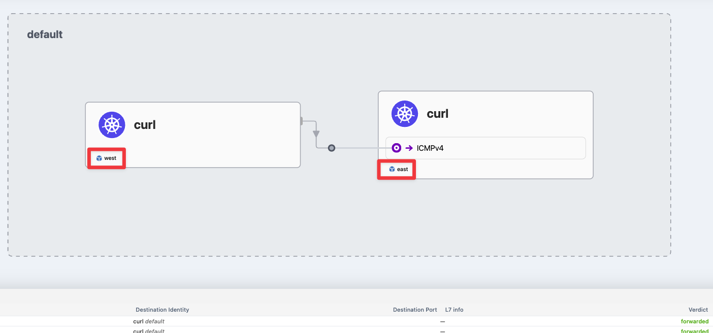
3.7. Load-balancing & Service Discovery - Docs
# cat << EOF | kubectl apply --context kind-west -f - apiVersion: apps/v1 kind: Deployment metadata: name: webpod spec: replicas: 2 selector: matchLabels: app: webpod template: metadata: labels: app: webpod spec: affinity: podAntiAffinity: requiredDuringSchedulingIgnoredDuringExecution: - labelSelector: matchExpressions: - key: app operator: In values: - sample-app topologyKey: "kubernetes.io/hostname" containers: - name: webpod image: traefik/whoami ports: - containerPort: 80 --- apiVersion: v1 kind: Service metadata: name: webpod labels: app: webpod annotations: service.cilium.io/global: "true" spec: selector: app: webpod ports: - protocol: TCP port: 80 targetPort: 80 type: ClusterIP EOF # cat << EOF | kubectl apply --context kind-east -f - apiVersion: apps/v1 kind: Deployment metadata: name: webpod spec: replicas: 2 selector: matchLabels: app: webpod template: metadata: labels: app: webpod spec: affinity: podAntiAffinity: requiredDuringSchedulingIgnoredDuringExecution: - labelSelector: matchExpressions: - key: app operator: In values: - sample-app topologyKey: "kubernetes.io/hostname" containers: - name: webpod image: traefik/whoami ports: - containerPort: 80 --- apiVersion: v1 kind: Service metadata: name: webpod labels: app: webpod annotations: service.cilium.io/global: "true" spec: selector: app: webpod ports: - protocol: TCP port: 80 targetPort: 80 type: ClusterIP EOF # 확인 # 각 west/east cluster에 두개의 pod가 생겼으므로 clustermesh에 의해 총 4개의 routing정보가 표시된다. kwest get svc,ep webpod && keast get svc,ep webpod kwest exec -it -n kube-system ds/cilium -c cilium-agent -- cilium service list --clustermesh-affinity ID Frontend Service Type Backend ... 13 10.2.108.113:80/TCP ClusterIP 1 => 10.0.1.33:80/TCP (active) 2 => 10.0.1.39:80/TCP (active) 3 => 10.1.1.50:80/TCP (active) 4 => 10.1.1.73:80/TCP (active) keast exec -it -n kube-system ds/cilium -c cilium-agent -- cilium service list --clustermesh-affinity ID Frontend Service Type Backend ... 13 10.3.222.71:80/TCP ClusterIP 1 => 10.0.1.33:80/TCP (active) 2 => 10.0.1.39:80/TCP (active) 3 => 10.1.1.50:80/TCP (active) 4 => 10.1.1.73:80/TCP (active) # kubectl exec -it curl-pod --context kind-west -- ping -c 1 10.1.1.50 64 bytes from 10.1.1.50: icmp_seq=1 ttl=62 time=0.251 ms kubectl exec -it curl-pod --context kind-east -- ping -c 1 10.0.1.33 64 bytes from 10.0.1.33: icmp_seq=1 ttl=62 time=0.260 ms # kubectl exec -it curl-pod --context kind-west -- sh -c 'while true; do curl -s --connect-timeout 1 webpod ; sleep 1; echo "---"; done;' kubectl exec -it curl-pod --context kind-east -- sh -c 'while true; do curl -s --connect-timeout 1 webpod ; sleep 1; echo "---"; done;' # 현재 Service Annotations 설정 kwest describe svc webpod | grep Annotations -A1 Annotations: service.cilium.io/global: true Selector: app=webpod keast describe svc webpod | grep Annotations -A1 Annotations: service.cilium.io/global: true Selector: app=webpod # 모니터링 : 반복 접속해두기 kubectl exec -it curl-pod --context kind-west -- sh -c 'while true; do curl -s --connect-timeout 1 webpod ; sleep 1; echo "---"; done;' # kwest scale deployment webpod --replicas 1 kwest exec -it -n kube-system ds/cilium -c cilium-agent -- cilium service list --clustermesh-affinity 13 10.2.108.113:80/TCP ClusterIP 1 => 10.0.1.39:80/TCP (active) 2 => 10.1.1.50:80/TCP (active) 3 => 10.1.1.73:80/TCP (active) keast exec -it -n kube-system ds/cilium -c cilium-agent -- cilium service list --clustermesh-affinity 13 10.3.222.71:80/TCP ClusterIP 1 => 10.0.1.39:80/TCP (active) 2 => 10.1.1.50:80/TCP (active) 3 => 10.1.1.73:80/TCP (active) # 로컬 k8s 에 목적지가 없을 경우 어떻게 되나요? kwest scale deployment webpod --replicas 0 kwest exec -it -n kube-system ds/cilium -c cilium-agent -- cilium service list --clustermesh-affinity 13 10.2.108.113:80/TCP ClusterIP 1 => 10.1.1.50:80/TCP (active) 2 => 10.1.1.73:80/TCP (active) keast exec -it -n kube-system ds/cilium -c cilium-agent -- cilium service list --clustermesh-affinity 13 10.3.222.71:80/TCP ClusterIP 1 => 10.1.1.50:80/TCP (active) 2 => 10.1.1.73:80/TCP (active) # kwest scale deployment webpod --replicas 2 kwest exec -it -n kube-system ds/cilium -c cilium-agent -- cilium service list --clustermesh-affinity keast exec -it -n kube-system ds/cilium -c cilium-agent -- cilium service list --clustermesh-affinity # tcpdump 확인 : dataplane flow 확인 docker exec -it west-control-plane tcpdump -i any tcp port 80 -nnq docker exec -it west-worker tcpdump -i any tcp port 80 -nnq docker exec -it east-control-plane tcpdump -i any tcp port 80 -nnq docker exec -it east-worker tcpdump -i any tcp port 80 -nnq
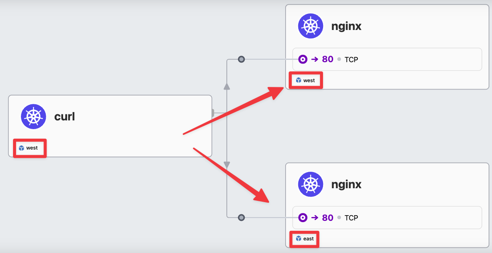
3.8. Service Affinity - Docs
# 모니터링 : 반복 접속해두기 kubectl exec -it curl-pod --context kind-west -- sh -c 'while true; do curl -s --connect-timeout 1 webpod ; sleep 1; echo "---"; done;' # 현재 Service Annotations 설정 kwest describe svc webpod | grep Annotations -A1 Annotations: service.cilium.io/global: true Selector: app=webpod keast describe svc webpod | grep Annotations -A1 Annotations: service.cilium.io/global: true Selector: app=webpod # Session Affinity Local 설정 kwest annotate service webpod service.cilium.io/affinity=local --overwrite kwest describe svc webpod | grep Annotations -A3 Annotations: service.cilium.io/affinity: local service.cilium.io/global: true Selector: app=webpod Type: ClusterIP keast annotate service webpod service.cilium.io/affinity=local --overwrite keast describe svc webpod | grep Annotations -A3 Annotations: service.cilium.io/affinity: local service.cilium.io/global: true Selector: app=webpod Type: ClusterIP # 확인 kwest exec -it -n kube-system ds/cilium -c cilium-agent -- cilium service list --clustermesh-affinity 13 10.2.108.113:80/TCP ClusterIP 1 => 10.1.1.50:80/TCP (active) 2 => 10.1.1.73:80/TCP (active) 3 => 10.0.1.186:80/TCP (active) (preferred) 4 => 10.0.1.89:80/TCP (active) (preferred) keast exec -it -n kube-system ds/cilium -c cilium-agent -- cilium service list --clustermesh-affinity 13 10.3.222.71:80/TCP ClusterIP 1 => 10.1.1.50:80/TCP (active) (preferred) 2 => 10.1.1.73:80/TCP (active) (preferred) 3 => 10.0.1.186:80/TCP (active) 4 => 10.0.1.89:80/TCP (active) # 호출 확인 kubectl exec -it curl-pod --context kind-west -- sh -c 'while true; do curl -s --connect-timeout 1 webpod ; sleep 1; echo "---"; done;' kubectl exec -it curl-pod --context kind-east -- sh -c 'while true; do curl -s --connect-timeout 1 webpod ; sleep 1; echo "---"; done;' # 현재 상태에서 replicas 변경 후 확인 : preferred 동작 이해하기! # west cluster의 curl-pod에서 webpod로 호출 하는 중이다. kubectl exec -it curl-pod --context kind-west -- sh -c 'while true; do curl -s --connect-timeout 1 webpod ; sleep 1; echo "---"; done;' # 이 상황에서 west cluster의 webpod replicas를 0으로 줄이면, cilium service list의 clustermesh-affinity에서 preferred로 되어있던 같은 cluster내의 pod가 사라지고 # east cluster의 pod(active)만 남게 되므로 그쪽으로 traffic이 routing 된다!! kwest scale deployment webpod --replicas 0 kwest exec -it -n kube-system ds/cilium -c cilium-agent -- cilium service list --clustermesh-affinity 13 10.2.108.113:80/TCP ClusterIP 1 => 10.1.1.50:80/TCP (active) 2 => 10.1.1.73:80/TCP (active) # 다시 기본 설정값 적용 # 다시 west cluster의 webpod replicas를 2로 다시 복구하면 cilium service list의 clustermesh-affinity에서 prefferred로 되어있던 같은 cluster내의 pod가 다시 올라오고 # 이제는 더이상 east cluster의 pod로 traffic이 routing되지 않고 같은 cluster인 west cluster의 pod(preferred)로 routing된다. kwest scale deployment webpod --replicas 2 # tcpdump 확인 docker exec -it west-control-plane tcpdump -i any tcp port 80 -nnq docker exec -it west-worker tcpdump -i any tcp port 80 -nnq docker exec -it east-control-plane tcpdump -i any tcp port 80 -nnq docker exec -it east-worker tcpdump -i any tcp port 80 -nnq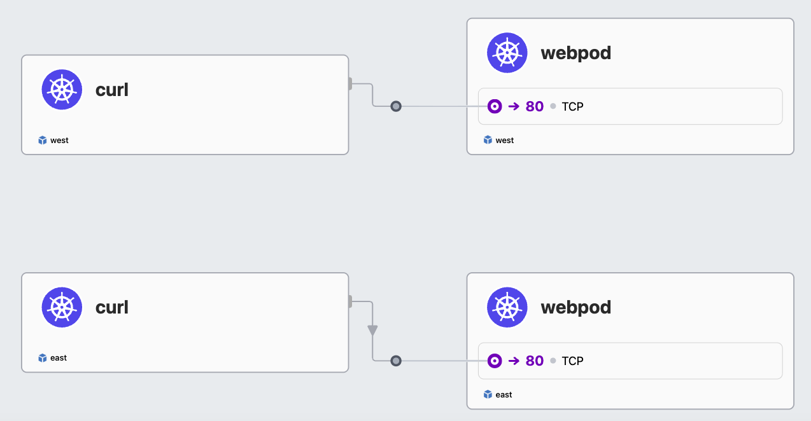
3.8.1.
service.cilium.io/affinity# 현재 설정 상태 확인 kwest exec -it -n kube-system ds/cilium -c cilium-agent -- cilium service list --clustermesh-affinity 13 10.2.108.113:80/TCP ClusterIP 1 => 10.1.1.50:80/TCP (active) 2 => 10.1.1.73:80/TCP (active) 3 => 10.0.1.166:80/TCP (active) (preferred) 4 => 10.0.1.82:80/TCP (active) (preferred) keast exec -it -n kube-system ds/cilium -c cilium-agent -- cilium service list --clustermesh-affinity 13 10.3.222.71:80/TCP ClusterIP 1 => 10.1.1.50:80/TCP (active) (preferred) 2 => 10.1.1.73:80/TCP (active) (preferred) 3 => 10.0.1.166:80/TCP (active) 4 => 10.0.1.82:80/TCP (active) kwest describe svc webpod | grep Annotations -A3 Annotations: service.cilium.io/affinity: local service.cilium.io/global: true Selector: app=webpod Type: ClusterIP keast describe svc webpod | grep Annotations -A3 Annotations: service.cilium.io/affinity: local service.cilium.io/global: true Selector: app=webpod Type: ClusterIP # remote # local cluster의 pod가 아닌 remoter cluster pod가 preferred!! kwest annotate service webpod service.cilium.io/affinity=remote --overwrite keast annotate service webpod service.cilium.io/affinity=remote --overwrite kwest describe svc webpod | grep Annotations -A3 Annotations: service.cilium.io/affinity: remote service.cilium.io/global: true Selector: app=webpod Type: ClusterIP keast describe svc webpod | grep Annotations -A3 Annotations: service.cilium.io/affinity: remote service.cilium.io/global: true Selector: app=webpod Type: ClusterIP # 이제는 각 clustermesh내에서 remote에 있는 cluster의 pod가 preferred pod가 된다!! kwest exec -it -n kube-system ds/cilium -c cilium-agent -- cilium service list --clustermesh-affinity 13 10.2.108.113:80/TCP ClusterIP 1 => 10.1.1.50:80/TCP (active) (preferred) 2 => 10.1.1.73:80/TCP (active) (preferred) 3 => 10.0.1.166:80/TCP (active) 4 => 10.0.1.82:80/TCP (active) keast exec -it -n kube-system ds/cilium -c cilium-agent -- cilium service list --clustermesh-affinity 13 10.3.222.71:80/TCP ClusterIP 1 => 10.1.1.50:80/TCP (active) 2 => 10.1.1.73:80/TCP (active) 3 => 10.0.1.166:80/TCP (active) (preferred) 4 => 10.0.1.82:80/TCP (active) (preferred) # 호출 확인 kubectl exec -it curl-pod --context kind-west -- sh -c 'while true; do curl -s --connect-timeout 1 webpod ; sleep 1; echo "---"; done;' kubectl exec -it curl-pod --context kind-east -- sh -c 'while true; do curl -s --connect-timeout 1 webpod ; sleep 1; echo "---"; done;' # kwest scale deployment webpod --replicas 0 kwest exec -it -n kube-system ds/cilium -c cilium-agent -- cilium service list --clustermesh-affinity 13 10.2.108.113:80/TCP ClusterIP 1 => 10.1.1.50:80/TCP (active) (preferred) 2 => 10.1.1.73:80/TCP (active) (preferred) keast exec -it -n kube-system ds/cilium -c cilium-agent -- cilium service list --clustermesh-affinity 13 10.3.222.71:80/TCP ClusterIP 1 => 10.1.1.50:80/TCP (active) 2 => 10.1.1.73:80/TCP (active) # 다시 설정 원복 kwest scale deployment webpod --replicas 2
3.8.2.
service.cilium.io/shared# 현재 설정 상태 확인 => service.cilium.io/affinity: remote 상태 kwest exec -it -n kube-system ds/cilium -c cilium-agent -- cilium service list --clustermesh-affinity keast exec -it -n kube-system ds/cilium -c cilium-agent -- cilium service list --clustermesh-affinity kwest describe svc webpod | grep Annotations -A3 Annotations: service.cilium.io/affinity: remote service.cilium.io/global: true Selector: app=webpod Type: ClusterIP keast describe svc webpod | grep Annotations -A3 Annotations: service.cilium.io/affinity: remote service.cilium.io/global: true Selector: app=webpod Type: ClusterIP # local kwest annotate service webpod service.cilium.io/affinity=local --overwrite keast annotate service webpod service.cilium.io/affinity=local --overwrite kwest describe svc webpod | grep Annotations -A3 keast describe svc webpod | grep Annotations -A3 kwest exec -it -n kube-system ds/cilium -c cilium-agent -- cilium service list --clustermesh-affinity keast exec -it -n kube-system ds/cilium -c cilium-agent -- cilium service list --clustermesh-affinity # shared=false : 적용 시, 다른 k8s 클러스터가 영향을 받는다! kwest annotate service webpod service.cilium.io/shared=false kwest describe svc webpod | grep Annotations -A3 kwest exec -it -n kube-system ds/cilium -c cilium-agent -- cilium service list --clustermesh-affinity 13 10.2.108.113:80/TCP ClusterIP 1 => 10.1.1.50:80/TCP (active) 2 => 10.1.1.73:80/TCP (active) 3 => 10.0.1.167:80/TCP (active) (preferred) 4 => 10.0.1.40:80/TCP (active) (preferred) # east cluster의 cilium service list에서 west cluster의 pod ip가 보이지 않는다. keast exec -it -n kube-system ds/cilium -c cilium-agent -- cilium service list --clustermesh-affinity 13 10.3.222.71:80/TCP ClusterIP 1 => 10.1.1.50:80/TCP (active) (preferred) 2 => 10.1.1.73:80/TCP (active) (preferred) # 호출 확인 kubectl exec -it curl-pod --context kind-west -- sh -c 'while true; do curl -s --connect-timeout 1 webpod ; sleep 1; echo "---"; done;' kubectl exec -it curl-pod --context kind-east -- sh -c 'while true; do curl -s --connect-timeout 1 webpod ; sleep 1; echo "---"; done;' # 다시 설정 원복 kwest annotate service webpod service.cilium.io/shared=true --overwrite kwest describe svc webpod | grep Annotations -A3 keast describe svc webpod | grep Annotations -A3 kwest exec -it -n kube-system ds/cilium -c cilium-agent -- cilium service list --clustermesh-affinity keast exec -it -n kube-system ds/cilium -c cilium-agent -- cilium service list --clustermesh-affinity
3.9. clustermesh-apiserver 파드 정보 확인 : krew pexec 플러그인 활용 - Github
# kwest exec -it -n kube-system ds/cilium -c cilium-agent -- cilium node list Name IPv4 Address Endpoint CIDR IPv6 Address Endpoint CIDR Source east/east-control-plane 172.18.0.5 10.1.0.0/24 clustermesh east/east-worker 172.18.0.4 10.1.1.0/24 clustermesh west/west-control-plane 172.18.0.2 10.0.0.0/24 custom-resource west/west-worker 172.18.0.3 10.0.1.0/24 local keast exec -it -n kube-system ds/cilium -c cilium-agent -- cilium node list Name IPv4 Address Endpoint CIDR IPv6 Address Endpoint CIDR Source east/east-control-plane 172.18.0.5 10.1.0.0/24 custom-resource east/east-worker 172.18.0.4 10.1.1.0/24 local west/west-control-plane 172.18.0.2 10.0.0.0/24 clustermesh west/west-worker 172.18.0.3 10.0.1.0/24 clustermesh kwest exec -it -n kube-system ds/cilium -c cilium-agent -- cilium identity list keast exec -it -n kube-system ds/cilium -c cilium-agent -- cilium identity list kwest exec -it -n kube-system ds/cilium -c cilium-agent -- cilium bpf ipcache list keast exec -it -n kube-system ds/cilium -c cilium-agent -- cilium bpf ipcache list kwest exec -it -n kube-system ds/cilium -c cilium-agent -- cilium map get cilium_ipcache keast exec -it -n kube-system ds/cilium -c cilium-agent -- cilium map get cilium_ipcache kwest exec -it -n kube-system ds/cilium -c cilium-agent -- cilium service list keast exec -it -n kube-system ds/cilium -c cilium-agent -- cilium service list kwest exec -it -n kube-system ds/cilium -c cilium-agent -- cilium bpf lb list 10.2.127.79:443/TCP (0) 0.0.0.0:0 (2) (0) [ClusterIP, InternalLocal, non-routable] keast exec -it -n kube-system ds/cilium -c cilium-agent -- cilium bpf lb list 10.3.196.180:443/TCP (0) 0.0.0.0:0 (2) (0) [ClusterIP, InternalLocal, non-routable] # kubectl describe pod -n kube-system -l k8s-app=clustermesh-apiserver ... Containers: etcd: Container ID: containerd://7668abdd87c354ab9295ff9f0aa047b3bd658a8671016c4564a1045f9e32cb9f Image: quay.io/cilium/clustermesh-apiserver:v1.17.6@sha256:f619e97432db427e1511bf91af3be8ded418c53a353a09629e04c5880659d1df Image ID: quay.io/cilium/clustermesh-apiserver@sha256:f619e97432db427e1511bf91af3be8ded418c53a353a09629e04c5880659d1df Ports: 2379/TCP, 9963/TCP Host Ports: 0/TCP, 0/TCP Command: /usr/bin/etcd Args: --data-dir=/var/run/etcd --name=clustermesh-apiserver --client-cert-auth --trusted-ca-file=/var/lib/etcd-secrets/ca.crt --cert-file=/var/lib/etcd-secrets/tls.crt --key-file=/var/lib/etcd-secrets/tls.key --listen-client-urls=https://127.0.0.1:2379,https://[$(HOSTNAME_IP)]:2379 --advertise-client-urls=https://[$(HOSTNAME_IP)]:2379 --initial-cluster-token=$(INITIAL_CLUSTER_TOKEN) --auto-compaction-retention=1 --listen-metrics-urls=http://[$(HOSTNAME_IP)]:9963 --metrics=basic ... apiserver: Container ID: containerd://96da1c1ca39cb54d9e4def9333195f9a3812bf4978adcbe72bf47202b029e28d Image: quay.io/cilium/clustermesh-apiserver:v1.17.6@sha256:f619e97432db427e1511bf91af3be8ded418c53a353a09629e04c5880659d1df Image ID: quay.io/cilium/clustermesh-apiserver@sha256:f619e97432db427e1511bf91af3be8ded418c53a353a09629e04c5880659d1df Ports: 9880/TCP, 9962/TCP Host Ports: 0/TCP, 0/TCP Command: /usr/bin/clustermesh-apiserver Args: clustermesh --debug --cluster-name=$(CLUSTER_NAME) --cluster-id=$(CLUSTER_ID) --kvstore-opt=etcd.config=/var/lib/cilium/etcd-config.yaml --kvstore-opt=etcd.qps=20 --kvstore-opt=etcd.bootstrapQps=10000 --max-connected-clusters=255 --health-port=9880 --enable-external-workloads=false --prometheus-serve-addr=:9962 --controller-group-metrics=all # etcd 컨터이너 로그 확인 kubectl logs -n kube-system deployment/clustermesh-apiserver -c etcd # apiserver 컨터이너 로그 확인 kubectl logs -n kube-system deployment/clustermesh-apiserver -c apiserver # kwest exec -it -n kube-system ds/cilium -c cilium-agent -- cilium status --all-clusters ClusterMesh: 1/1 remote clusters ready, 1 global-services west: ready, 2 nodes, 9 endpoints, 7 identities, 1 services, 0 MCS-API service exports, 0 reconnections (last: never) └ etcd: 1/1 connected, leases=0, lock leases=0, has-quorum=true: endpoint status checks are disabled, ID: da1e6d481fd94dd └ remote configuration: expected=true, retrieved=true, cluster-id=1, kvstoremesh=false, sync-canaries=true, service-exports=disabled └ synchronization status: nodes=true, endpoints=true, identities=true, services=true keast exec -it -n kube-system ds/cilium -c cilium-agent -- cilium status --all-clusters ClusterMesh: 1/1 remote clusters ready, 1 global-services west: ready, 2 nodes, 9 endpoints, 7 identities, 1 services, 0 MCS-API service exports, 0 reconnections (last: never) └ etcd: 1/1 connected, leases=0, lock leases=0, has-quorum=true: endpoint status checks are disabled, ID: da1e6d481fd94dd └ remote configuration: expected=true, retrieved=true, cluster-id=1, kvstoremesh=false, sync-canaries=true, service-exports=disabled └ synchronization status: nodes=true, endpoints=true, identities=true, services=true # etcd 컨테이너 bash 진입 후 확인 # krew pexec 플러그인 활용 https://github.com/ssup2/kpexec kubectl get pod -n kube-system -l k8s-app=clustermesh-apiserver DPOD=clustermesh-apiserver-5cf45db9cc-zzx64 kubectl pexec $DPOD -it -T -n kube-system -c etcd -- bash ------------------------------------------------ ps -ef ps -ef -T -o pid,ppid,comm,args ps -ef -T -o args COMMAND /usr/bin/etcd --data-dir=/var/run/etcd --name=clustermesh-apiserver --client-cert-auth --trusted-ca-file=/var/lib/etcd-se cat /proc/1/cmdline ; echo /usr/bin/etcd--data-dir=/var/run/etcd--name=clustermesh-apiserver--client-cert-auth--trusted-ca-file=/var/lib/etcd-secrets/ca.crt--cert-file=/var/lib/etcd-secrets/tls.crt--key-file=/var/lib/etcd-secrets/tls.key--listen-client-urls=https://127.0.0.1:2379,https://[10.1.1.243]:2379--advertise-client-urls=https://[10.1.1.243]:2379--initial-cluster-token=c044b25f-dfd4-4eb5-b3ab-05dbfb60117c--auto-compaction-retention=1--listen-metrics-urls=http://[10.1.1.243]:9963--metrics=basic ss -tnlp ss -tnp State Recv-Q Send-Q Local Address:Port Peer Address:Port Process ESTAB 0 0 10.1.1.1:2379 172.19.0.5:42934 users:(("etcd",pid=1,fd=14)) ESTAB 0 0 10.1.1.1:2379 172.19.0.5:38114 users:(("etcd",pid=1,fd=15)) exit ------------------------------------------------ kubectl pexec $DPOD -it -T -n kube-system -c apiserver -- bash ------------------------------------------------ ps -ef ps -ef -T -o pid,ppid,comm,args ps -ef -T -o args cat /proc/1/cmdline ; echo usr/bin/clustermesh-apiserverclustermesh--debug--cluster-name=east--cluster-id=2--kvstore-opt=etcd.config=/var/lib/cilium/etcd-config.yaml--kvstore-opt=etcd.qps=20--kvstore-opt=etcd.bootstrapQps=10000--max-connected-clusters=255--health-port=9880--enable-external-workloads=false--prometheus-serve-addr=:9962--controller-group-metrics=all ss -tnlp ss -tnp State Recv-Q Send-Q Local Address:Port Peer Address:Port Process ESTAB 0 0 10.1.1.1:34038 172.19.0.5:6443 users:(("clustermesh-api",pid=1,fd=6)) ESTAB 0 0 127.0.0.1:38530 127.0.0.1:2379 users:(("clustermesh-api",pid=1,fd=7)) exit ------------------------------------------------
{kind=link}
{kind=link}
{kind=link}
{kind=link}
도전과제6kind 와 같은 네트워크로 frr 컨테이너를 배포(bgp config 주입)하여, cilium 과 BGP(ECMP) + LB IPAM 로 인입 설정해보기
도전과제7만약 west 는 요청 클라이언트만 있고, east 는 대상 서버(파드)만 존재 시, ClusterMesh 서비스 통신 최적 설정을 샘플 App대상으로 해보기- 대상 서버가 없는 west 에 Service(Global) 를 만들어야 되는지?
- west 요청 클라이언트가 호출하는 주소(엔드포인트)는 어떤 주소가 되는지?
도전과제8Cilium ClusterMesh 환경에서 NetworkPolicies : 실습 해보자 - Docs
도전과제9Cilium DataStore(Kvstore) 를 설정해보고, Cilium 기본 CRD 모드와의 장단점 비교 정리 - Docs# cat << EOF > etcd.yaml apiVersion: v1 kind: Pod metadata: name: etcd namespace: kube-system labels: app: etcd spec: containers: - name: etcd image: quay.io/coreos/etcd:v3.5.0 command: - /usr/local/bin/etcd args: - --name=etcd0 - --data-dir=/etcd-data - --listen-client-urls=http://0.0.0.0:2379 - --advertise-client-urls=http://etcd.kube-system.svc.cluster.local:2379 ports: - containerPort: 2379 --- apiVersion: v1 kind: Service metadata: name: etcd namespace: kube-system spec: ports: - port: 2379 targetPort: 2379 selector: app: etcd EOF kubectl apply -f etcd.yaml # helm upgrade cilium cilium/cilium --namespace kube-system --reuse-values \ --set etcd.enabled=true --set identityAllocationMode=kvstore --set "etcd.endpoints[0]=http://etcd.kube-system.svc.cluster.local:2379" etcd: enabled: true endpoints: - http://etcd.kube-system.svc.cluster.local:2379 kubectl rollout restart deploy cilium-operator -n kube-system kubectl rollout restart ds cilium -n kube-system # kubectl exec -it -n kube-system ds/cilium -c cilium-agent -- cilium status KVStore: Ok etcd: 1/1 connected, leases=1, lock leases=1, has-quorum=true: http://etcd.kube-system.svc.cluster.local:2379 - 3.5.0 (Leader) ...
도전과제10Cilium ClusterMesh EndpointSlice synchronization feature if you need Headless Services support.
- 실습 후 kind 삭제 :
kind delete cluster --namewest&& kind delete cluster --nameeast&& docker rm -f mypc
도전과제11kind k8s 클러스터를 3개를 생성 후, 3개의 클러스터 모두를 ClusterMesh로 연결해보기kind k8s 클러스터 west, east, center 배포 - Docs
# kind create cluster --name west --image kindest/node:v1.33.2 --config - <<EOF kind: Cluster apiVersion: kind.x-k8s.io/v1alpha4 nodes: - role: control-plane extraPortMappings: - containerPort: 30000 # sample apps hostPort: 30000 - containerPort: 30001 # hubble ui hostPort: 30001 networking: podSubnet: "10.0.0.0/16" serviceSubnet: "10.10.0.0/16" disableDefaultCNI: true kubeProxyMode: none EOF # kind create cluster --name east --image kindest/node:v1.33.2 --config - <<EOF kind: Cluster apiVersion: kind.x-k8s.io/v1alpha4 nodes: - role: control-plane extraPortMappings: - containerPort: 31000 # sample apps hostPort: 31000 - containerPort: 31001 # hubble ui hostPort: 31001 networking: podSubnet: "10.1.0.0/16" serviceSubnet: "10.11.0.0/16" disableDefaultCNI: true kubeProxyMode: none EOF # kind create cluster --name center --image kindest/node:v1.33.2 --config - <<EOF kind: Cluster apiVersion: kind.x-k8s.io/v1alpha4 nodes: - role: control-plane extraPortMappings: - containerPort: 32000 # sample apps hostPort: 32000 - containerPort: 32001 # hubble ui hostPort: 32001 networking: podSubnet: "10.2.0.0/16" serviceSubnet: "10.12.0.0/16" disableDefaultCNI: true kubeProxyMode: none EOF # 설치 확인 kubectl config get-contexts kubectl get node -v=6 --context kind-west kubectl get node -v=6 --context kind-east kubectl get node -v=6 --context kind-center cat ~/.kube/config # alias 설정 alias kwest='kubectl --context kind-west' alias keast='kubectl --context kind-east' alias kcenter='kubectl --context kind-center' # 확인 kwest get node -owide keast get node -owide kcenter get node -owide
Cilium CNI 배포 :
ClusterMesh- Docs , Blog# cilium cli 로 cilium cni 설치 cilium install --version 1.17.6 --set ipam.mode=kubernetes \ --set kubeProxyReplacement=true --set bpf.masquerade=true \ --set endpointHealthChecking.enabled=false --set healthChecking=false \ --set operator.replicas=1 --set debug.enabled=true \ --set routingMode=native --set autoDirectNodeRoutes=true --set ipv4NativeRoutingCIDR=10.0.0.0/16 \ --set ipMasqAgent.enabled=true --set ipMasqAgent.config.nonMasqueradeCIDRs='{10.1.0.0/16,10.2.0.0/16}' \ --set cluster.name=west --set cluster.id=1 \ --context kind-west watch kubectl get pod -n kube-system --context kind-west # cilium install --version 1.17.6 --set ipam.mode=kubernetes \ --set kubeProxyReplacement=true --set bpf.masquerade=true \ --set endpointHealthChecking.enabled=false --set healthChecking=false \ --set operator.replicas=1 --set debug.enabled=true \ --set routingMode=native --set autoDirectNodeRoutes=true --set ipv4NativeRoutingCIDR=10.1.0.0/16 \ --set ipMasqAgent.enabled=true --set ipMasqAgent.config.nonMasqueradeCIDRs='{10.0.0.0/16,10.2.0.0/16}' \ --set cluster.name=east --set cluster.id=2 \ --context kind-east watch kubectl get pod -n kube-system --context kind-east # cilium install --version 1.17.6 --set ipam.mode=kubernetes \ --set kubeProxyReplacement=true --set bpf.masquerade=true \ --set endpointHealthChecking.enabled=false --set healthChecking=false \ --set operator.replicas=1 --set debug.enabled=true \ --set routingMode=native --set autoDirectNodeRoutes=true --set ipv4NativeRoutingCIDR=10.2.0.0/16 \ --set ipMasqAgent.enabled=true --set ipMasqAgent.config.nonMasqueradeCIDRs='{10.0.0.0/16,10.1.0.0/16}' \ --set cluster.name=center --set cluster.id=3 \ --context kind-center watch kubectl get pod -n kube-system --context kind-center # 확인 kwest get pod -A && keast get pod -A && kcenter get pod -A cilium status --context kind-west cilium status --context kind-east cilium status --context kind-center kwest exec -it -n kube-system ds/cilium -- cilium status --verbose keast exec -it -n kube-system ds/cilium -- cilium status --verbose kcenter exec -it -n kube-system ds/cilium -- cilium status --verbose kwest -n kube-system exec ds/cilium -c cilium-agent -- cilium-dbg bpf ipmasq list keast -n kube-system exec ds/cilium -c cilium-agent -- cilium-dbg bpf ipmasq list kcenter -n kube-system exec ds/cilium -c cilium-agent -- cilium-dbg bpf ipmasq list # k9s 사용 시 k9s --context kind-west k9s --context kind-east k9s --context kind-center
Setting up Cluster Mesh :
--enable-kvstoremesh=true- Docs# 라우팅 정보 확인 docker exec -it west-control-plane ip -c route docker exec -it east-control-plane ip -c route docker exec -it center-control-plane ip -c route # Specify the Cluster Name and ID : 이미 설정 되어 있음 # Shared Certificate Authority kwest delete secret -n kube-system cilium-ca keast delete secret -n kube-system cilium-ca kubectl --context kind-center get secret -n kube-system cilium-ca -o yaml | \ kubectl --context kind-west create -f - kubectl --context kind-center get secret -n kube-system cilium-ca -o yaml | \ kubectl --context kind-east create -f - kwest get secret -n kube-system cilium-ca keast get secret -n kube-system cilium-ca # Enable Cluster Mesh : 간단한 실습 환경으로 NodePort 로 진행 cilium clustermesh enable --service-type NodePort --enable-kvstoremesh=true --context kind-center cilium clustermesh enable --service-type NodePort --enable-kvstoremesh=true --context kind-west cilium clustermesh enable --service-type NodePort --enable-kvstoremesh=true --context kind-east # Connect Clusters : 2개 이상 클러스터 연결 시에 3분 정도 연결 시간 소요.. cilium clustermesh connect --context kind-center --destination-context kind-west cilium clustermesh connect --context kind-center --destination-context kind-east cilium clustermesh connect --context kind-west --destination-context kind-east # 확인 cilium clustermesh status --context kind-center --wait cilium clustermesh status --context kind-west --wait cilium clustermesh status --context kind-east --wait # kubectl exec -it -n kube-system ds/cilium -c cilium-agent --context kind-west -- cilium-dbg troubleshoot clustermesh kubectl exec -it -n kube-system ds/cilium -c cilium-agent --context kind-east -- cilium-dbg troubleshoot clustermesh kubectl exec -it -n kube-system ds/cilium -c cilium-agent --context kind-center -- cilium-dbg troubleshoot clustermesh # 확인 kwest get pod -A && keast get pod -A && kcenter get pod -A cilium status --context kind-west cilium status --context kind-east cilium status --context kind-center cilium clustermesh status --context kind-center cilium clustermesh status --context kind-west cilium clustermesh status --context kind-east cilium config view --context kind-center cilium config view --context kind-west cilium config view --context kind-east kcenter exec -it -n kube-system ds/cilium -- cilium status --verbose kwest exec -it -n kube-system ds/cilium -- cilium status --verbose keast exec -it -n kube-system ds/cilium -- cilium status --verbose helm get values -n kube-system cilium --kube-context kind-center helm get values -n kube-system cilium --kube-context kind-west helm get values -n kube-system cilium --kube-context kind-east cluster: id: 2 name: east clustermesh: apiserver: kvstoremesh: enabled: false service: type: NodePort tls: auto: enabled: true method: cronJob schedule: 0 0 1 */4 * config: clusters: - ips: - 172.18.0.4 name: center port: 32379 - ips: - 172.18.0.2 name: west port: 32379 enabled: true # 라우팅 정보 확인 : 클러스터간 PodCIDR 라우팅 주입 확인! docker exec -it west-control-plane ip -c route docker exec -it east-control-plane ip -c route docker exec -it center-control-plane ip -c route # Hubble UI 설정 helm upgrade cilium cilium/cilium --version 1.17.6 --namespace kube-system --reuse-values \ --set hubble.enabled=true --set hubble.relay.enabled=true --set hubble.ui.enabled=true \ --set hubble.ui.service.type=NodePort --set hubble.ui.service.nodePort=30001 --kube-context kind-west kwest -n kube-system rollout restart ds/cilium helm upgrade cilium cilium/cilium --version 1.17.6 --namespace kube-system --reuse-values \ --set hubble.enabled=true --set hubble.relay.enabled=true --set hubble.ui.enabled=true \ --set hubble.ui.service.type=NodePort --set hubble.ui.service.nodePort=31001 --kube-context kind-east kwest -n kube-system rollout restart ds/cilium helm upgrade cilium cilium/cilium --version 1.17.6 --namespace kube-system --reuse-values \ --set hubble.enabled=true --set hubble.relay.enabled=true --set hubble.ui.enabled=true \ --set hubble.ui.service.type=NodePort --set hubble.ui.service.nodePort=32001 --kube-context kind-center kwest -n kube-system rollout restart ds/cilium # 확인 kwest get svc,ep -n kube-system hubble-ui --context kind-west keast get svc,ep -n kube-system hubble-ui --context kind-east keast get svc,ep -n kube-system hubble-ui --context kind-center # hubble-ui 접속 시 open http://localhost:30001 open http://localhost:31001 open http://localhost:32001
Load-balancing & Service Discovery - Docs
# cat << EOF | kubectl apply --context kind-center -f - apiVersion: v1 kind: Pod metadata: name: curl-pod labels: app: curl spec: containers: - name: curl image: nicolaka/netshoot command: ["tail"] args: ["-f", "/dev/null"] terminationGracePeriodSeconds: 0 EOF # cat << EOF | kubectl apply --context kind-west -f - apiVersion: apps/v1 kind: Deployment metadata: name: webpod spec: replicas: 1 selector: matchLabels: app: webpod template: metadata: labels: app: webpod spec: containers: - name: webpod image: traefik/whoami ports: - containerPort: 80 --- apiVersion: v1 kind: Service metadata: name: webpod labels: app: webpod annotations: service.cilium.io/global: "true" spec: selector: app: webpod ports: - protocol: TCP port: 80 targetPort: 80 type: ClusterIP EOF # cat << EOF | kubectl apply --context kind-east -f - apiVersion: apps/v1 kind: Deployment metadata: name: webpod spec: replicas: 1 selector: matchLabels: app: webpod template: metadata: labels: app: webpod spec: containers: - name: webpod image: traefik/whoami ports: - containerPort: 80 --- apiVersion: v1 kind: Service metadata: name: webpod labels: app: webpod annotations: service.cilium.io/global: "true" spec: selector: app: webpod ports: - protocol: TCP port: 80 targetPort: 80 type: ClusterIP EOF # cat << EOF | kubectl apply --context kind-center -f - apiVersion: apps/v1 kind: Deployment metadata: name: webpod spec: replicas: 1 selector: matchLabels: app: webpod template: metadata: labels: app: webpod spec: containers: - name: webpod image: traefik/whoami ports: - containerPort: 80 --- apiVersion: v1 kind: Service metadata: name: webpod labels: app: webpod annotations: service.cilium.io/global: "true" spec: selector: app: webpod ports: - protocol: TCP port: 80 targetPort: 80 type: ClusterIP EOF # 확인 kwest get svc,ep webpod && keast get svc,ep webpod && kcenter get svc,ep webpod kwest exec -it -n kube-system ds/cilium -c cilium-agent -- cilium service list --clustermesh-affinity ID Frontend Service Type Backend 13 10.10.47.168:80/TCP ClusterIP 1 => 10.0.0.157:80/TCP (active) 2 => 10.1.0.224:80/TCP (active) 3 => 10.2.0.222:80/TCP (active) keast exec -it -n kube-system ds/cilium -c cilium-agent -- cilium service list --clustermesh-affinity kcenter exec -it -n kube-system ds/cilium -c cilium-agent -- cilium service list --clustermesh-affinity # 모니터링 : 반복 접속해두기 kubectl exec -it curl-pod --context kind-center -- sh -c 'while true; do curl -s --connect-timeout 1 webpod ; sleep 1; echo "---"; done;'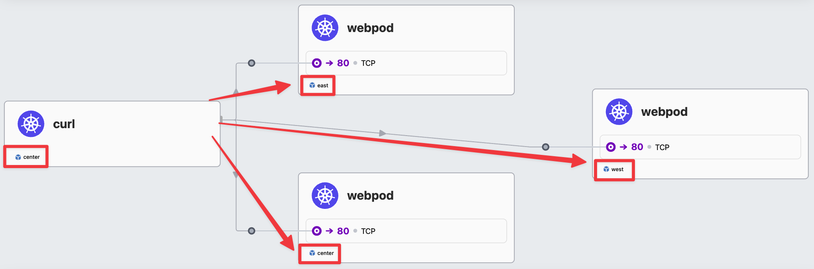
- 실습 후 삭제 :
kind delete cluster --name west && kind delete cluster --name east && kind delete cluster --name center
{kind=link}